Post-processing of EddyPro _fluxnet_ output files
Notebook version: 9.1 (4 Mar 2025)
Author: Lukas Hörtnagl (holukas@ethz.ch)
BACKGROUND#
This notebook demonstrates part of the flux post-processing used for fluxes from Swiss FluxNet research stations
For a description of the different flux levels, see Flux Processing Chain
Flux calculations (Level-1) were done in a previous step
This notebook uses the calculated fluxes (Level-1) and applies several post-processing steps:
Quality flag extension (Level-2)
Storage correction (Level-3.1)
Outlier removal (Level-3.2)
USTAR filtering (Level-3.3) - needs known thresholds from separate analysis, e.g. from FLUXNET
Gap-filling (Level-4.1) for flux using multiple methods (MDS, long-term random forest)
Other flux levels are currently not produced in this example:
NEE Partitioning (Level-4.2)
Important
Flux variable names in the input files should follow the FLUXNET convention
GENERAL SETTINGS#
Flux variable#
FLUXVAR is the name of the flux variable in the data files. In the EddyPro _fluxnet_ output files, the flux variables we primarily use are:
FC… CO2 flux, becomesNEEafter storage correction (Level-3.1)LE… Latent heat flux (water)H… Sensible heat fluxFN2O… Nitrous oxide fluxFCH4… Methane flux
There are more flux variables in the output file, but we rarely need them:
FH2O… H2O flux, very important but it is the same asETandLEbut with different unitsET… Evapotranspiration, very important but it is the same asFH2OandLEbut with different units. We can easily calculteETlater fromLE, e.g. inReddyProc.TAU… Momentum flux, a measure of the turbulent transfer of momentum between the land surface and the atmosphere
Set the name of the flux variable in the output file(s), must use the FLUXNET naming convention, e.g. FC, FH2O, LE, ET, H, FN2O, FCH4:
FLUXVAR = "LE"
Site location#
Latitude and longitude of the site where data were recorded. This info is mainly used to calculate potential radiation, which is then used to divide the dataset into daytime and nighttime data.
UTC offset of the timestamp used in the dataset, important for calculating potential radiation for this location with the correct timestamp.
SITE_LAT = 47.210227
SITE_LON = 8.410645
UTC_OFFSET = 1 # Time stamp offset in relation to UTC, e.g. 1 for UTC+01:00 (CET), important for the calculation of potential radiation for detecting daytime and nighttime
Daytime/nighttime#
Threshold for potential radiation in
W m-2, records below threshold are considered nighttime
NIGHTTIME_THRESHOLD = 20
Quality requirements#
The default setting is to accept highest-quality and medium-quality fluxes for daytime (overall quality flag
QCF= 0 or 1), and highest-quality fluxes only for nighttime (flagQCF= 0)DAYTIME_ACCEPT_QCF_BELOW = 2accepts high- (QCF=0) and medium-quality (QCF=1) fluxes for daytime, rejects low-quality (QCF=2) fluxesNIGHTTIMETIME_ACCEPT_QCF_BELOW = 1accepts high-quality (QCF=0) fluxes for nighttime, rejects medium-quality (QCF=1) and low-quality (QCF=2) fluxesThis strict quality-filtering removes a lot of data points during nighttime
DAYTIME_ACCEPT_QCF_BELOW = 2
NIGHTTIMETIME_ACCEPT_QCF_BELOW = 2
IMPORTS#
This notebook uses
diive(source code) to check eddy covariance fluxes for quality
import importlib.metadata
import warnings
from datetime import datetime
from pathlib import Path
import matplotlib.pyplot as plt
import pandas as pd
import scipy.stats
import seaborn as sns
from diive.core.dfun.stats import sstats # Time series stats
from diive.core.io.files import save_parquet, load_parquet
from diive.core.plotting.timeseries import TimeSeries # For simple (interactive) time series plotting
from diive.pkgs.flux.hqflux import analyze_highest_quality_flux
from diive.pkgs.fluxprocessingchain.fluxprocessingchain import FluxProcessingChain
from diive.pkgs.fluxprocessingchain.fluxprocessingchain import LoadEddyProOutputFiles
warnings.filterwarnings(action='ignore', category=FutureWarning)
warnings.filterwarnings(action='ignore', category=UserWarning)
version_diive = importlib.metadata.version("diive")
print(f"diive version: v{version_diive}")
diive version: v0.86.0
DOCSTRING for FluxProcessingChain#
# help(FluxProcessingChain)
LOAD DATA (2 options)#
It is possible to load data from (multiple) EddyPro fluxnet output files (data from files will be merged), or directly from one single parquet file.
parquet files are a good option for large datasets because they load and save much faster than when using conventional CSV files.
For large datasets, it makes sense to first load and merge data from the original EddyPro fluxnet output files, then convert the merged data to one single parquet file and then use this file as input file.
Option 1: Load data from single or multiple EddyPro fluxnet output files#
Used to read data from the EddyPro fluxnet output files
Found files will be merged together into one single dataframe (
maindf)
If you want to search for EddyPro fluxnet files in specific locations, you can specify multiple folders here:
# # Folder(s) where input file(s) are located
# SOURCEDIRS = [r'example_data/']
# ep = LoadEddyProOutputFiles(sourcedir=SOURCEDIRS, filetype='EDDYPRO-FLUXNET-CSV-30MIN')
# ep.searchfiles()
# ep.loadfiles()
# maindf = ep.maindf
# metadata = ep.metadata
Option 2: Load data from parquet file#
Can be used to continue a previous session where another flux variable was already post-processed
For example, if you have already post-processed CO2 flux and now want to post-process H2O flux
Also detects time resolution of time series, this info was lost when saving to the parquet file
If you want to load data directly from a specific parquet file, you can specify its name and location here:
SOURCEDIR = r"../30_MERGE_DATA"
FILENAME = r"33.3_CH-CHA_IRGA+QCL+LGR+M10+MGMT_Level-1_eddypro_fluxnet_2005-2024.parquet"
FILEPATH = Path(SOURCEDIR) / FILENAME
print(f"Data will be loaded from the following file:\n{FILEPATH}")
Data will be loaded from the following file:
..\30_MERGE_DATA\33.3_CH-CHA_IRGA+QCL+LGR+M10+MGMT_Level-1_eddypro_fluxnet_2005-2024.parquet
maindf = load_parquet(filepath=FILEPATH)
Loaded .parquet file ..\30_MERGE_DATA\33.3_CH-CHA_IRGA+QCL+LGR+M10+MGMT_Level-1_eddypro_fluxnet_2005-2024.parquet (4.782 seconds).
--> Detected time resolution of <30 * Minutes> / 30min
Option 3: Load example data#
# from diive.configs.exampledata import load_exampledata_EDDYPRO_FLUXNET_CSV_30MIN
# maindf, metadata = load_exampledata_EDDYPRO_FLUXNET_CSV_30MIN()
(Optional) Restrict data to time range#
# # Restrict data range
# maindf = maindf.loc[(maindf.index.year >= 2008) & (maindf.index.year <= 2010)].copy()
Check data#
display(maindf.head(3))
display(maindf.tail(3))
display(sstats(maindf[FLUXVAR]))
| AIR_CP | AIR_DENSITY | AIR_MV | AIR_RHO_CP | AOA_METHOD | AXES_ROTATION_METHOD | ... | ZL_UNCORR | SWC_GF1_0.15_1_gfXG_MEAN3H | TS_GF1_0.04_1_gfXG_MEAN3H | TS_GF1_0.15_1_gfXG_MEAN3H | TS_GF1_0.4_1_gfXG_MEAN3H | PREC_RAIN_TOT_GF1_0.5_1_MEAN3H | |
|---|---|---|---|---|---|---|---|---|---|---|---|---|---|
| TIMESTAMP_MIDDLE | |||||||||||||
| 2005-01-01 00:15:00 | NaN | NaN | NaN | NaN | NaN | NaN | ... | NaN | NaN | NaN | NaN | NaN | NaN |
| 2005-01-01 00:45:00 | NaN | NaN | NaN | NaN | NaN | NaN | ... | NaN | NaN | NaN | NaN | NaN | NaN |
| 2005-01-01 01:15:00 | NaN | NaN | NaN | NaN | NaN | NaN | ... | NaN | NaN | NaN | NaN | NaN | NaN |
3 rows × 517 columns
| AIR_CP | AIR_DENSITY | AIR_MV | AIR_RHO_CP | AOA_METHOD | AXES_ROTATION_METHOD | ... | ZL_UNCORR | SWC_GF1_0.15_1_gfXG_MEAN3H | TS_GF1_0.04_1_gfXG_MEAN3H | TS_GF1_0.15_1_gfXG_MEAN3H | TS_GF1_0.4_1_gfXG_MEAN3H | PREC_RAIN_TOT_GF1_0.5_1_MEAN3H | |
|---|---|---|---|---|---|---|---|---|---|---|---|---|---|
| TIMESTAMP_MIDDLE | |||||||||||||
| 2024-12-31 22:45:00 | 1008.00 | 1.26068 | 0.022929 | 1270.77 | 0.0 | 1.0 | ... | -0.067016 | 52.496681 | 3.502270 | 4.434965 | 5.525231 | 0.0 |
| 2024-12-31 23:15:00 | 1007.94 | 1.26203 | 0.022906 | 1272.05 | 0.0 | 1.0 | ... | -0.063931 | 52.495739 | 3.474913 | 4.437634 | 5.525231 | 0.0 |
| 2024-12-31 23:45:00 | 1007.89 | 1.26306 | 0.022888 | 1273.02 | 0.0 | 1.0 | ... | -0.048536 | 52.476295 | 3.443940 | 4.438413 | 5.525344 | 0.0 |
3 rows × 517 columns
| LE | |
|---|---|
| STARTDATE | 2005-01-01 00:15 |
| ENDDATE | 2024-12-31 23:45 |
| PERIOD | 7304 days 23:30:00 |
| NOV | 260765 |
| MISSING | 89875 |
| MISSING_PERC | 25.631702 |
| MEAN | 52.224222 |
| MEDIAN | 15.2036 |
| SD | 124.973962 |
| VAR | 15618.491056 |
| SD/MEAN | 2.393027 |
| SUM | 13618249.310789 |
| MIN | -7542.09 |
| MAX | 6761.88 |
| P01 | -138.72708 |
| P05 | -25.47786 |
| P25 | 0.518618 |
| P75 | 81.214 |
| P95 | 255.0872 |
| P99 | 372.6308 |
# TimeSeries(series=maindf[FLUXVAR]).plot_interactive()
TimeSeries(series=maindf[FLUXVAR]).plot()
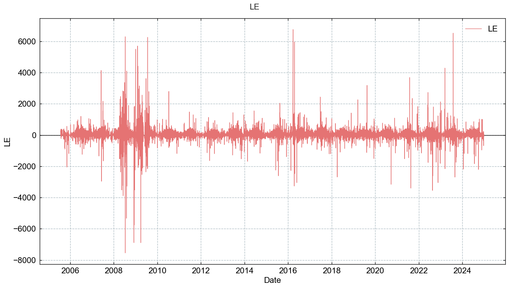
START FLUX PROCESSING CHAIN#
First we need to initialize the processing chain by providing some basic info.
At the same time, some fundamental variables are also created: potential radiation, and two flags based on it: daytime flag (1=daytime) and nighttime flag (1=nighttime).
fpc = FluxProcessingChain(
df=maindf,
fluxcol=FLUXVAR,
site_lat=SITE_LAT,
site_lon=SITE_LON,
utc_offset=UTC_OFFSET,
nighttime_threshold=NIGHTTIME_THRESHOLD,
daytime_accept_qcf_below=DAYTIME_ACCEPT_QCF_BELOW,
nighttimetime_accept_qcf_below=NIGHTTIMETIME_ACCEPT_QCF_BELOW
)
Detected base variable H2O for LE. (H2O was used to calculate LE.)
Calculated potential radiation from latitude and longitude (SW_IN_POT) ...
Calculated daytime flag DAYTIME and nighttime flag NIGHTTIME from SW_IN_POT ...
++ Added new columns ['SW_IN_POT', 'DAYTIME', 'NIGHTTIME'] to input data.
Let’s check the flux processing chain dataframe: this are the data the chain is working with in this run:
fpc.fpc_df
| LE | USTAR | SW_IN_POT | DAYTIME | NIGHTTIME | |
|---|---|---|---|---|---|
| TIMESTAMP_MIDDLE | |||||
| 2005-01-01 00:15:00 | NaN | NaN | 0.0 | 0.0 | 1.0 |
| 2005-01-01 00:45:00 | NaN | NaN | 0.0 | 0.0 | 1.0 |
| 2005-01-01 01:15:00 | NaN | NaN | 0.0 | 0.0 | 1.0 |
| 2005-01-01 01:45:00 | NaN | NaN | 0.0 | 0.0 | 1.0 |
| 2005-01-01 02:15:00 | NaN | NaN | 0.0 | 0.0 | 1.0 |
| ... | ... | ... | ... | ... | ... |
| 2024-12-31 21:45:00 | 3.62981 | 0.129708 | 0.0 | 0.0 | 1.0 |
| 2024-12-31 22:15:00 | 5.25544 | 0.143010 | 0.0 | 0.0 | 1.0 |
| 2024-12-31 22:45:00 | 4.60506 | 0.135574 | 0.0 | 0.0 | 1.0 |
| 2024-12-31 23:15:00 | 5.01648 | 0.147416 | 0.0 | 0.0 | 1.0 |
| 2024-12-31 23:45:00 | 6.53174 | 0.177982 | 0.0 | 0.0 | 1.0 |
350640 rows × 5 columns
Level-2: QUALITY FLAG EXTENSION#
Extract additional quality information from the EddyPro output and store it in newly added quality flags.
Note that the USTAR filtering is not part of the Level-2 calculations.
User settings#
A test for missing values is always included: flag calculated here from missing flux values in the EddyPro output file
SSITC tests (default: True)#
Flag calculated in EddyPro
Combination of the two partial tests steady state test and developed turbulent conditions test
This notebook expects the SSITC flag to follow the flagging policy according to Mauder and Foken 2004:
0for best quality fluxes1for fluxes suitable for general analysis such as annual budgets (although this is debatable for nighttime data)2for fluxes that should be discarded from the dataset
TEST_SSITC = True # Default True
TEST_SSITC_SETFLAG_TIMEPERIOD = {2: [[1, '2022-05-01', '2023-09-30']]}
Flux base variable completeness test (default: True)#
Flag newly calculated here
Check completeness of the variable that was used to calculate the respective flux
Example:
CO2is the base variable that was used to calculate fluxFC, the test is therefore run onCO2Checks number of records of the relevant base variable available for each averaging Interval and calculates completeness flag as follows:
0for files where >= 99% of base variable are available1for files where >= 97% and < 99% of base variable are available2for files where < 97% of base variable are available
List of flux base variables and the corresponding fluxes:
CO2: used to calculateFCH2O: used to calculateFH2OH2O: used to calculateLEH2O: used to calculateETT_SONIC: used to calculateHN2O: used to calculateFN2OCH4: used to calculateFCH4
TEST_GAS_COMPLETENESS = True # Default True
Spectral correction factor test (default: True)#
Flag calculated here from the gas
SCFvariable in EddyPro output file
TEST_SPECTRAL_CORRECTION_FACTOR = True # Default True
Signal strength test#
Signal strength / AGC / window dirtiness test (if available)
Flag calculated here from the signal strength / AGC variable for the gas analyzer in EddyPro output file
SIGNAL_STRENGTH_COL: Name of the column storing the signal strength, typically ‘CUSTOM_AGC_MEAN’ for LI-7500, ‘CUSTOM_SIGNAL_STRENGTH_IRGA72_MEAN’ for LI-7200, or something similarSIGNAL_STRENGTH_THRESHOLD: Signal strength threshold, flux values where threshold is exceeded are flagged as rejectedSIGNAL_STRENGTH_METHOD:discard aboveflags fluxes where signal strength > threshold,discard belowwhere signal strength < threshold
# Signal strength
TEST_SIGNAL_STRENGTH = True
TEST_SIGNAL_STRENGTH_COL = 'CUSTOM_AGC_MEAN' # Typical variable name in fluxnet files
TEST_SIGNAL_STRENGTH_METHOD = 'discard above'
TEST_SIGNAL_STRENGTH_THRESHOLD = 90
# TimeSeries(series=df_orig[SIGNAL_STRENGTH_COL]).plot_interactive()
TimeSeries(series=maindf[TEST_SIGNAL_STRENGTH_COL]).plot()

Raw data screening tests#
Flags were calculated in EddyPro
See here for more details: Despiking and raw data statistical screening (EddyPro help)
TEST_RAWDATA = True # Default True
TEST_RAWDATA_SPIKES = True # Default True
TEST_RAWDATA_AMPLITUDE = True # Default True
TEST_RAWDATA_DROPOUT = True # Default True
TEST_RAWDATA_ABSLIM = False # Default False
TEST_RAWDATA_SKEWKURT_HF = False # Default False
TEST_RAWDATA_SKEWKURT_SF = False # Default False
TEST_RAWDATA_DISCONT_HF = False # Default False
TEST_RAWDATA_DISCONT_SF = False # Default False
Angle-of-attack test (default: False)#
This test calculates sample-wise Angle of Attacks throughout the current flux averaging period, and flags it if the percentage of angles of attack exceeding a user-defined range is beyond a (user-defined) threshold.
Source: EddyPro help (3 Jan 2024)
Flag was calculated in EddyPro
Flag can be useful during some time periods when the sonic anemometer had issues
Not used by default (similar to ICOS)
TEST_RAWDATA_ANGLE_OF_ATTACK = True # Default False
# TEST_RAWDATA_ANGLE_OF_ATTACK_APPLICATION_DATES = []
TEST_RAWDATA_ANGLE_OF_ATTACK_APPLICATION_DATES = [['2008-01-01', '2010-01-01'],
['2016-03-01', '2016-05-01'],
['2021-12-10', '2021-12-23']]
Steadiness of horizontal wind test (default: False)#
This test assesses whether the along-wind and crosswind components of the wind vector undergo a systematic reduction (or increase) throughout the file. If the quadratic combination of such systematic variations is beyond the user-selected limit, the flux averaging period is hard-flagged for instationary horizontal wind (Vickers and Mahrt, 1997, Par. 6g).
Source: EddyPro help (3 Jan 2024)
Flag was calculated in EddyPro
TEST_RAWDATA_STEADINESS_OF_HORIZONTAL_WIND = False # Default False
Run#
LEVEL2_SETTINGS = {
'signal_strength': {
'apply': TEST_SIGNAL_STRENGTH,
'signal_strength_col': TEST_SIGNAL_STRENGTH_COL,
'method': TEST_SIGNAL_STRENGTH_METHOD,
'threshold': TEST_SIGNAL_STRENGTH_THRESHOLD},
'raw_data_screening_vm97': {
'apply': TEST_RAWDATA,
'spikes': TEST_RAWDATA_SPIKES,
'amplitude': TEST_RAWDATA_AMPLITUDE,
'dropout': TEST_RAWDATA_DROPOUT,
'abslim': TEST_RAWDATA_ABSLIM,
'skewkurt_hf': TEST_RAWDATA_SKEWKURT_HF,
'skewkurt_sf': TEST_RAWDATA_SKEWKURT_SF,
'discont_hf': TEST_RAWDATA_DISCONT_HF,
'discont_sf': TEST_RAWDATA_DISCONT_SF},
'ssitc': {
'apply': TEST_SSITC,
'setflag_timeperiod': TEST_SSITC_SETFLAG_TIMEPERIOD},
'gas_completeness': {
'apply': TEST_GAS_COMPLETENESS},
'spectral_correction_factor': {
'apply': TEST_SPECTRAL_CORRECTION_FACTOR},
'angle_of_attack': {
'apply': TEST_RAWDATA_ANGLE_OF_ATTACK,
'application_dates': TEST_RAWDATA_ANGLE_OF_ATTACK_APPLICATION_DATES},
'steadiness_of_horizontal_wind': {
'apply': TEST_RAWDATA_STEADINESS_OF_HORIZONTAL_WIND}
}
fpc.level2_quality_flag_expansion(**LEVEL2_SETTINGS)
[MissingValues] running MissingValues ...
SSITC TEST: Generated new flag variable FLAG_L2_LE_SSITC_TEST, values taken from output variable LE_SSITC_TEST ...
Flag FLAG_L2_LE_SSITC_TEST with value 1 was set to 2 between 2022-05-01 and 2023-09-30
FLUX BASE VARIABLE COMPLETENESS TEST: Generated new flag variable FLAG_L2_LE_COMPLETENESS_TEST, newly calculated from variable H2O, with flag 0 (good values) where available number of records for H2O >= 0.99, flag 1 (ok values) >= 0.97 and < 0.99, flag 2 (bad values) < 0.97...
SPECTRAL CORRECTION FACTOR TEST: Generating new flag variable FLAG_L2_LE_SCF_TEST, newly calculated from output variable LE_SCF, withflag 0 (good values) where LE_SCF < 2, flag 1 (ok values) where LE_SCF >= 2 and < 4, flag 2 (bad values) where LE_SCF >= 4...
SIGNAL STRENGTH TEST: Generating new flag variable FLAG_L2_LE_SIGNAL_STRENGTH_TEST, newly calculated from output variable CUSTOM_AGC_MEAN, with flag 0 (good values) where CUSTOM_AGC_MEAN <= 90, flag 2 (bad values) where CUSTOM_AGC_MEAN > 90 ...
RAW DATA TEST: Generated new flag variable FLAG_L2_LE_H2O_VM97_SPIKE_HF_TEST, values taken from output variable H2O_VM97_TEST from position 1, based on H2O, with flag 0 (good values) where test passed, flag 2 (bad values) where test failed (for hard flags) or flag 1 (ok values) where test failed (for soft flags) ...
RAW DATA TEST: Generated new flag variable FLAG_L2_LE_H2O_VM97_AMPLITUDE_RESOLUTION_HF_TEST, values taken from output variable H2O_VM97_TEST from position 2, based on H2O, with flag 0 (good values) where test passed, flag 2 (bad values) where test failed (for hard flags) or flag 1 (ok values) where test failed (for soft flags) ...
RAW DATA TEST: Generated new flag variable FLAG_L2_LE_H2O_VM97_DROPOUT_TEST, values taken from output variable H2O_VM97_TEST from position 3, based on H2O, with flag 0 (good values) where test passed, flag 2 (bad values) where test failed (for hard flags) or flag 1 (ok values) where test failed (for soft flags) ...
ANGLE OF ATTACK TEST: will be applied on the following dates only: [['2008-01-01', '2010-01-01'], ['2016-03-01', '2016-05-01'], ['2021-12-10', '2021-12-23']]
ANGLE OF ATTACK TEST: Generated new flag variable FLAG_L2_LE_VM97_AOA_HF_TEST, values taken from output variable None, with flag 0 (good values) where test passed, flag 2 (bad values) where test failed ...
Finalize Level-2#
fpc.finalize_level2()
++Added new column FLAG_L2_LE_MISSING_TEST.
++Added new column FLAG_L2_LE_SSITC_TEST.
++Added new column FLAG_L2_LE_COMPLETENESS_TEST.
++Added new column FLAG_L2_LE_SCF_TEST.
++Added new column FLAG_L2_LE_SIGNAL_STRENGTH_TEST.
++Added new column FLAG_L2_LE_H2O_VM97_SPIKE_HF_TEST.
++Added new column FLAG_L2_LE_H2O_VM97_AMPLITUDE_RESOLUTION_HF_TEST.
++Added new column FLAG_L2_LE_H2O_VM97_DROPOUT_TEST.
++Added new column FLAG_L2_LE_VM97_AOA_HF_TEST.
++Added new column SUM_L2_LE_HARDFLAGS.
++Added new column SUM_L2_LE_SOFTFLAGS.
++Added new column SUM_L2_LE_FLAGS.
++Added new column FLAG_L2_LE_QCF.
++Added new column LE_L2_QCF.
++Added new column LE_L2_QCF0.
Available Level-2 variables#
This shows all available Level-2 variables for this flux
[x for x in fpc.fpc_df.columns if 'L2' in x]
['FLAG_L2_LE_MISSING_TEST',
'FLAG_L2_LE_SSITC_TEST',
'FLAG_L2_LE_COMPLETENESS_TEST',
'FLAG_L2_LE_SCF_TEST',
'FLAG_L2_LE_SIGNAL_STRENGTH_TEST',
'FLAG_L2_LE_H2O_VM97_SPIKE_HF_TEST',
'FLAG_L2_LE_H2O_VM97_AMPLITUDE_RESOLUTION_HF_TEST',
'FLAG_L2_LE_H2O_VM97_DROPOUT_TEST',
'FLAG_L2_LE_VM97_AOA_HF_TEST',
'SUM_L2_LE_HARDFLAGS',
'SUM_L2_LE_SOFTFLAGS',
'SUM_L2_LE_FLAGS',
'FLAG_L2_LE_QCF',
'LE_L2_QCF',
'LE_L2_QCF0']
Plots#
fpc.level2_qcf.showplot_qcf_heatmaps()
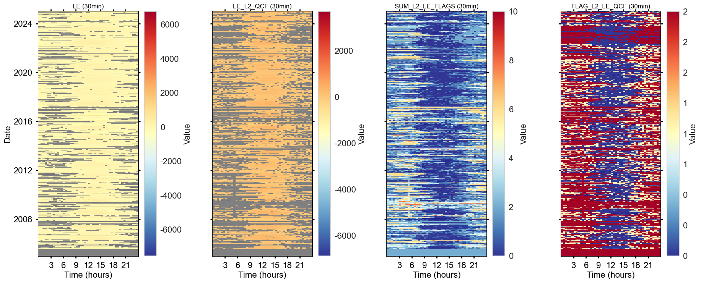
# fpc.level2_qcf.showplot_qcf_timeseries()
Reports#
fpc.level2_qcf.report_qcf_evolution()
========================================
QCF FLAG EVOLUTION
========================================
This output shows the evolution of the QCF overall quality flag
when test flags are applied sequentially to the variable LE.
Number of LE records before QC: 260765
+++ FLAG_L2_LE_MISSING_TEST rejected 0 values (+0.00%) TOTALS: flag 0: 260765 (100.00%) / flag 1: 0 (0.00%) / flag 2: 0 (0.00%)
+++ FLAG_L2_LE_SSITC_TEST rejected 51943 values (+19.92%) TOTALS: flag 0: 119043 (45.65%) / flag 1: 89779 (34.43%) / flag 2: 51943 (19.92%)
+++ FLAG_L2_LE_COMPLETENESS_TEST rejected 3833 values (+1.47%) TOTALS: flag 0: 117476 (45.05%) / flag 1: 87513 (33.56%) / flag 2: 55776 (21.39%)
+++ FLAG_L2_LE_SCF_TEST rejected 129 values (+0.05%) TOTALS: flag 0: 117307 (44.99%) / flag 1: 87553 (33.58%) / flag 2: 55905 (21.44%)
+++ FLAG_L2_LE_SIGNAL_STRENGTH_TEST rejected 10092 values (+3.87%) TOTALS: flag 0: 115815 (44.41%) / flag 1: 78953 (30.28%) / flag 2: 65997 (25.31%)
+++ FLAG_L2_LE_H2O_VM97_SPIKE_HF_TEST rejected 313 values (+0.12%) TOTALS: flag 0: 115598 (44.33%) / flag 1: 78857 (30.24%) / flag 2: 66310 (25.43%)
+++ FLAG_L2_LE_H2O_VM97_AMPLITUDE_RESOLUTION_HF_TEST rejected 4557 values (+1.75%) TOTALS: flag 0: 113342 (43.47%) / flag 1: 76556 (29.36%) / flag 2: 70867 (27.18%)
+++ FLAG_L2_LE_H2O_VM97_DROPOUT_TEST rejected 0 values (+0.00%) TOTALS: flag 0: 113342 (43.47%) / flag 1: 76556 (29.36%) / flag 2: 70867 (27.18%)
+++ FLAG_L2_LE_VM97_AOA_HF_TEST rejected 4100 values (+1.57%) TOTALS: flag 0: 112183 (43.02%) / flag 1: 73615 (28.23%) / flag 2: 74967 (28.75%)
In total, 74967 (28.75%) of the available records were rejected in this step.
INFO Rejected DAYTIME records where QCF flag >= 2
INFO Rejected NIGHTTIME records where QCF flag >= 2
fpc.level2_qcf.report_qcf_series()
========================================
SUMMARY: FLAG_L2_LE_QCF, QCF FLAG FOR LE
========================================
Between 2005-01-01 00:15 and 2024-12-31 23:45 ...
Total flux records BEFORE quality checks: 260765 (74.37% of potential)
Available flux records AFTER quality checks: 185798 (71.25% of total)
Rejected flux records: 74967 (28.75% of total)
Potential flux records: 350640
Potential flux records missed: 89875 (25.63% of potential)
# fpc.level2_qcf.report_qcf_flags()
Level-3.1: STORAGE CORRECTION#
The flux storage term (single point) is added to the flux
For some records, the storage term can be missing. In such cases, missing terms are gap-filled using the rolling mean in an expanding window.
Without gap-filling the storage term, we can lose an additional e.g. 2-3% of flux data
Run#
fpc.level31_storage_correction(gapfill_storage_term=True)
Detected storage variable SLE_SINGLE for LE.
Calculating storage-corrected flux LE_L3.1 from flux LE and storage term SLE_SINGLE ...
Missing values for storage term SLE_SINGLE_gfRMED_L3.1: 2275
Gap-filling storage-term SLE_SINGLE with rolling median (window size = 5 records, centered) | still missing values for storage term SLE_SINGLE_gfRMED_L3.1: 1804 ...
Gap-filling storage-term SLE_SINGLE with rolling median (window size = 7 records, centered) | still missing values for storage term SLE_SINGLE_gfRMED_L3.1: 595 ...
Gap-filling storage-term SLE_SINGLE with rolling median (window size = 9 records, centered) | still missing values for storage term SLE_SINGLE_gfRMED_L3.1: 459 ...
Gap-filling storage-term SLE_SINGLE with rolling median (window size = 11 records, centered) | still missing values for storage term SLE_SINGLE_gfRMED_L3.1: 297 ...
Gap-filling storage-term SLE_SINGLE with rolling median (window size = 13 records, centered) | still missing values for storage term SLE_SINGLE_gfRMED_L3.1: 205 ...
Gap-filling storage-term SLE_SINGLE with rolling median (window size = 15 records, centered) | still missing values for storage term SLE_SINGLE_gfRMED_L3.1: 158 ...
Gap-filling storage-term SLE_SINGLE with rolling median (window size = 17 records, centered) | still missing values for storage term SLE_SINGLE_gfRMED_L3.1: 118 ...
Gap-filling storage-term SLE_SINGLE with rolling median (window size = 19 records, centered) | still missing values for storage term SLE_SINGLE_gfRMED_L3.1: 96 ...
Gap-filling storage-term SLE_SINGLE with rolling median (window size = 21 records, centered) | still missing values for storage term SLE_SINGLE_gfRMED_L3.1: 79 ...
Gap-filling storage-term SLE_SINGLE with rolling median (window size = 23 records, centered) | still missing values for storage term SLE_SINGLE_gfRMED_L3.1: 68 ...
Gap-filling storage-term SLE_SINGLE with rolling median (window size = 25 records, centered) | still missing values for storage term SLE_SINGLE_gfRMED_L3.1: 56 ...
Gap-filling storage-term SLE_SINGLE with rolling median (window size = 27 records, centered) | still missing values for storage term SLE_SINGLE_gfRMED_L3.1: 49 ...
Gap-filling storage-term SLE_SINGLE with rolling median (window size = 29 records, centered) | still missing values for storage term SLE_SINGLE_gfRMED_L3.1: 35 ...
Gap-filling storage-term SLE_SINGLE with rolling median (window size = 31 records, centered) | still missing values for storage term SLE_SINGLE_gfRMED_L3.1: 30 ...
Gap-filling storage-term SLE_SINGLE with rolling median (window size = 33 records, centered) | still missing values for storage term SLE_SINGLE_gfRMED_L3.1: 26 ...
Gap-filling storage-term SLE_SINGLE with rolling median (window size = 35 records, centered) | still missing values for storage term SLE_SINGLE_gfRMED_L3.1: 23 ...
Gap-filling storage-term SLE_SINGLE with rolling median (window size = 37 records, centered) | still missing values for storage term SLE_SINGLE_gfRMED_L3.1: 19 ...
Gap-filling storage-term SLE_SINGLE with rolling median (window size = 39 records, centered) | still missing values for storage term SLE_SINGLE_gfRMED_L3.1: 17 ...
Gap-filling storage-term SLE_SINGLE with rolling median (window size = 41 records, centered) | still missing values for storage term SLE_SINGLE_gfRMED_L3.1: 15 ...
Gap-filling storage-term SLE_SINGLE with rolling median (window size = 43 records, centered) | still missing values for storage term SLE_SINGLE_gfRMED_L3.1: 14 ...
Gap-filling storage-term SLE_SINGLE with rolling median (window size = 45 records, centered) | still missing values for storage term SLE_SINGLE_gfRMED_L3.1: 13 ...
Gap-filling storage-term SLE_SINGLE with rolling median (window size = 47 records, centered) | still missing values for storage term SLE_SINGLE_gfRMED_L3.1: 12 ...
Gap-filling storage-term SLE_SINGLE with rolling median (window size = 49 records, centered) | still missing values for storage term SLE_SINGLE_gfRMED_L3.1: 11 ...
Gap-filling storage-term SLE_SINGLE with rolling median (window size = 51 records, centered) | still missing values for storage term SLE_SINGLE_gfRMED_L3.1: 10 ...
Gap-filling storage-term SLE_SINGLE with rolling median (window size = 55 records, centered) | still missing values for storage term SLE_SINGLE_gfRMED_L3.1: 9 ...
Gap-filling storage-term SLE_SINGLE with rolling median (window size = 69 records, centered) | still missing values for storage term SLE_SINGLE_gfRMED_L3.1: 8 ...
Gap-filling storage-term SLE_SINGLE with rolling median (window size = 75 records, centered) | still missing values for storage term SLE_SINGLE_gfRMED_L3.1: 7 ...
Gap-filling storage-term SLE_SINGLE with rolling median (window size = 87 records, centered) | still missing values for storage term SLE_SINGLE_gfRMED_L3.1: 6 ...
Gap-filling storage-term SLE_SINGLE with rolling median (window size = 89 records, centered) | still missing values for storage term SLE_SINGLE_gfRMED_L3.1: 4 ...
Gap-filling storage-term SLE_SINGLE with rolling median (window size = 93 records, centered) | still missing values for storage term SLE_SINGLE_gfRMED_L3.1: 3 ...
Gap-filling storage-term SLE_SINGLE with rolling median (window size = 95 records, centered) | still missing values for storage term SLE_SINGLE_gfRMED_L3.1: 2 ...
Gap-filling storage-term SLE_SINGLE with rolling median (window size = 99 records, centered) | still missing values for storage term SLE_SINGLE_gfRMED_L3.1: 1 ...
Gap-filling storage-term SLE_SINGLE with rolling median (window size = 197 records, centered) | still missing values for storage term SLE_SINGLE_gfRMED_L3.1: 0 ...
Finalize Level-3.1#
fpc.finalize_level31()
++Added new column SLE_SINGLE.
++Added new column SLE_SINGLE_gfRMED_L3.1.
++Added new column FLAG_SLE_SINGLE_gfRMED_L3.1_ISFILLED.
++Added new column LE_L3.1.
++Added new column LE_L3.1_QCF (Level-3.1 with applied quality flag from Level-2).
++Added new column LE_L3.1_QCF0 (Level-3.1 with applied quality flag from Level-2).
Available Level-3.1 variables#
This shows all available Level-3.1 variables for this flux
[x for x in fpc.fpc_df.columns if 'L3.1' in x]
['SLE_SINGLE_gfRMED_L3.1',
'FLAG_SLE_SINGLE_gfRMED_L3.1_ISFILLED',
'LE_L3.1',
'LE_L3.1_QCF',
'LE_L3.1_QCF0']
Plots#
fpc.level31.showplot()
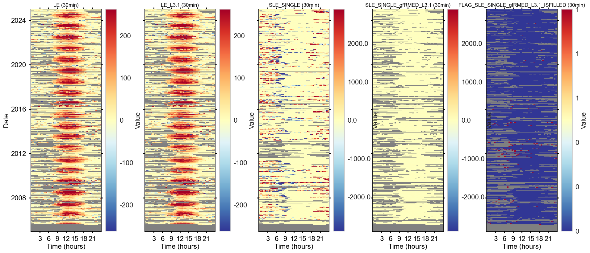
Report#
fpc.level31.report()
========================================
REPORT: STORAGE CORRECTION FOR LE
========================================
Swiss FluxNet processing chain, _L3.1: Storage Correction
The gap-filled storage term SLE_SINGLE_gfRMED_L3.1 was added to flux LE.
The storage-corrected flux was stored as LE_L3.1.
The flux was available for 260765 records (LE).
The original, non-gapfilled storage term was available for 315310 records (SLE_SINGLE).
The original storage term SLE_SINGLE was missing for 2275 flux records.
Without gap-filling the storage term (SLE_SINGLE), 2275 measured flux records (LE) are lost.
NOTE: There were more values available for storage term SLE_SINGLE than for flux LE.
However, for 2275 flux records no concurrent storage terms were available.
For this run, gap-filling of SLE_SINGLE was * SELECTED *.
After gap-filling the storage term, it was available for an additional 2275 records (SLE_SINGLE_gfRMED_L3.1).
In the storage-corrected flux LE_L3.1 with 260765 records,
- 99.1% (315310 records) of used storage terms come from originally calculated data (SLE_SINGLE)
- 0.9% (2275 records) of used storage terms come from gap-filled data (SLE_SINGLE_gfRMED_L3.1)
Stats for gap-filled storage terms:
NOV P01 MEDIAN P99
SLE_SINGLE_gfRMED_L3.1 2275 -17.763016 0.29499 21.41057
Stats for measured storage terms:
NOV P01 MEDIAN P99
SLE_SINGLE_gfRMED_L3.1 258490 -6.200018 -0.022723 6.416036
Optional: Analyze highest-quality flux (so far)#
Analysis of fluxes after Level-3.1 where the overall quality flag
QCF= 0This helps in understanding in what range the “true” flux occurs
Here, the highest-quality fluxes are additionally filtered for outlier values using the relatively fast Local Outlier Factor test
For this quick analysis, it is possible that the outlier test cuts off some “real” values that should be retained, but it nevertheless helps in understanding the flux range
QCF= 0 is best quality,QCF= medium quality,QCF= 2 bad quality and always rejectedThe difference between quality 0 and quality 1 or 2 is huge
analyze_highest_quality_flux(flux=fpc.fpc_df[fpc.filteredseries_hq.name], nighttime_flag=fpc.fpc_df['NIGHTTIME'])
>>> Removing outliers from highest-quality DAYTIME fluxes (LE_L3.1_QCF0)
>>> Outlier removal method: Local outlier factor across all data (n_neighbors=441, contamination=auto, repeat=False)
[LocalOutlierFactorAllData] running LocalOutlierFactorAllData ...
ITERATION#1: Total found outliers: 430 values (daytime+nighttime)
>>> Largest non-outlier flux >= 0 DAYTIME: 465.71970530000004
>>> Smallest non-outlier flux >= 0 DAYTIME: 0.526031
>>> Largest non-outlier flux < 0 DAYTIME: nan
>>> Smallest non-outlier flux < 0 DAYTIME: nan
>>> Largest outlier flux >= 0 DAYTIME: 650.95952
>>> Smallest outlier flux >= 0 DAYTIME: 0.004481000000000013
>>> Largest outlier flux < 0 DAYTIME: -0.027170600000000003
>>> Smallest outlier flux < 0 DAYTIME: -224.454713
>>> Removing outliers from highest-quality NIGHTTIME fluxes (LE_L3.1_QCF0)
>>> Outlier removal method: Local outlier factor across all data (n_neighbors=119, contamination=auto, repeat=False)
[LocalOutlierFactorAllData] running LocalOutlierFactorAllData ...
ITERATION#1: Total found outliers: 125 values (daytime+nighttime)
>>> Largest non-outlier flux >= 0 NIGHTTIME: 160.842554
>>> Smallest non-outlier flux >= 0 NIGHTTIME: 0.001847000000000043
>>> Largest non-outlier flux < 0 NIGHTTIME: -0.0016439999999999788
>>> Smallest non-outlier flux < 0 NIGHTTIME: -34.367868
>>> Largest outlier flux >= 0 NIGHTTIME: 1290.098
>>> Smallest outlier flux >= 0 NIGHTTIME: 161.38085999999998
>>> Largest outlier flux < 0 NIGHTTIME: -33.957335
>>> Smallest outlier flux < 0 NIGHTTIME: -332.18147700000003
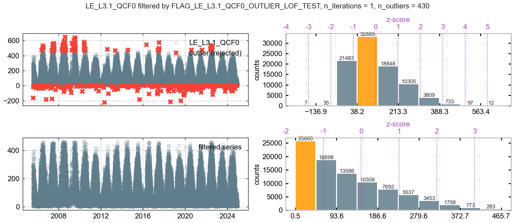
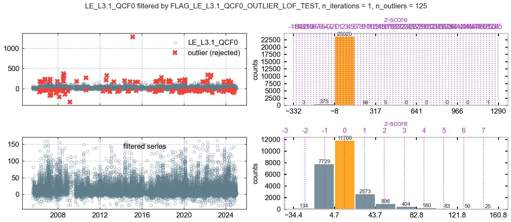
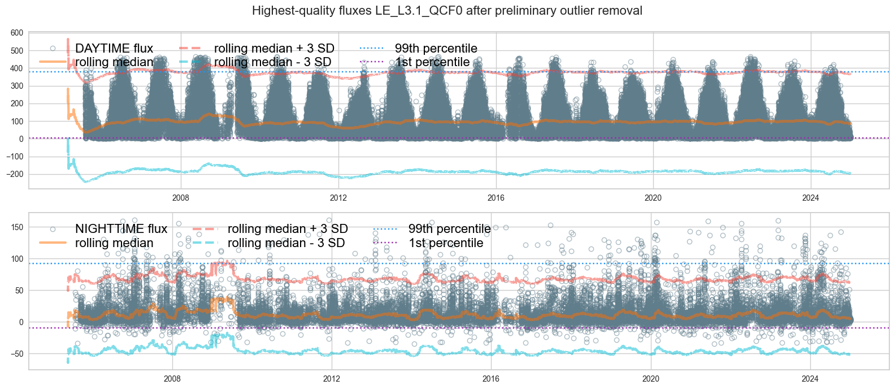
Level-3.2: OUTLIER DETECTION#
Running an outlier test creates a preview plot of the results
If the output looks as desired, run
fpc.level32_addflag()cell below the preview to accept the results you see in the plotAll subsequent tests will then be based on these results
This means that each test is run on the data already filtered by the previous test
Each test creates its own quality flag
At the end of Level-3.2, an overall quality flag
QCFis created that combines all of the individual flags into one single flag
Plot time series#
print(f"{fpc.filteredseries.name} \n(quality-controlled Level-3.1 version of {fpc.fluxcol})")
LE_L3.1_QCF
(quality-controlled Level-3.1 version of LE)
# TimeSeries(series=fpc.fpc_df[fpc.filteredseries.name]).plot_interactive()
TimeSeries(series=fpc.fpc_df[fpc.filteredseries.name]).plot()
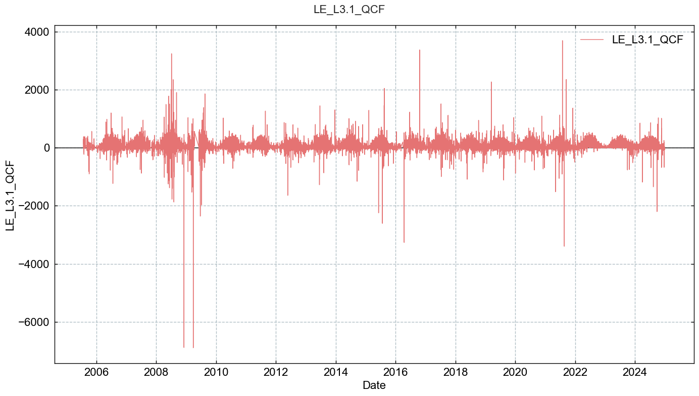
Initiate calculations#
fpc.level32_stepwise_outlier_detection()
Outlier flag: Absolute limits#
remove values outside a physically plausible range
typical value for CO2 flux
FC: +/-50 µmol m-2 s-1typical value for latent evaporation flux
LE: +800 / -50 W m-2typical value for sensible heat flux
H: +400 / -200 W m-2
# from diive.pkgs.outlierdetection.absolutelimits import AbsoluteLimits
# help(AbsoluteLimits)
MIN = -50
MAX = 800
fpc.level32_flag_outliers_abslim_test(minval=MIN, maxval=MAX, showplot=True, verbose=True)
[AbsoluteLimits] running AbsoluteLimits ...
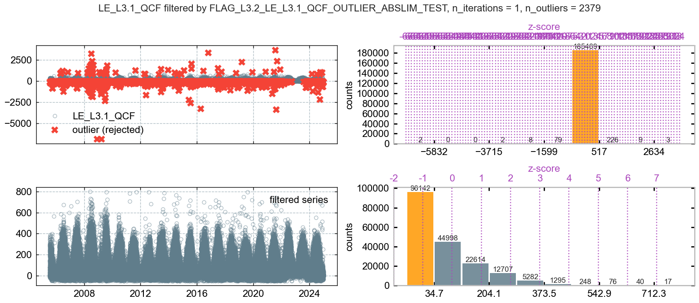
fpc.level32_addflag()
++Added flag column FLAG_L3.2_LE_L3.1_QCF_OUTLIER_ABSLIM_TEST to flag data
Outlier flag: Manual flag#
The interactive plot can be used to determine the exact start and end of time ranges or data points that need to be removed, e.g. due to known instrument failure
# from diive.pkgs.outlierdetection.manualremoval import ManualRemoval
# help(ManualRemoval)
# fpc.level32.showplot_cleaned(interactive=True) # True or False
# fpc.level32.showplot_cleaned(interactive=False) # True or False
REMOVE_DATES = [
['2008-12-01', '2009-05-01'], # Removes date range between two datetimes (inclusive)
# ['2008-12-01 00:00:15', '2022-05-03 06:45:00'], # Removes date range between two datetimes (inclusive)
# '2023-12-12 12:45:00' # Removes data point with specific timestamp
]
fpc.level32_flag_manualremoval_test(
remove_dates=REMOVE_DATES,
showplot=True, verbose=True)
[ManualRemoval] running ManualRemoval ...
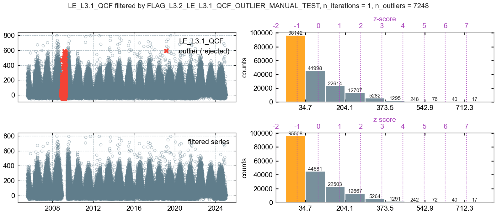
fpc.level32_addflag()
++Added flag column FLAG_L3.2_LE_L3.1_QCF_OUTLIER_MANUAL_TEST to flag data
# fpc.level32.showplot_cleaned(interactive=True) # True or False
Outlier flag: Hampel filter, separate for daytime and nighttime#
Recommended filter
Is slow compared to other filters:
tested with 1 year of 30MIN time resolution data and it needed approx. 43 seconds on a fast desktop computer
# from diive.pkgs.outlierdetection.hampel import Hampel
# help(Hampel)
%%time
WINDOW_LENGTH = 48 * 13
N_SIGMA_DT = 3.5
N_SIGMA_NT = 3.5
fpc.level32_flag_outliers_hampel_dtnt_test(window_length=WINDOW_LENGTH, n_sigma_dt=N_SIGMA_DT, n_sigma_nt=N_SIGMA_NT,
showplot=True, verbose=True, repeat=True)
[HampelDaytimeNighttime] running HampelDaytimeNighttime ...
ITERATION#1: Total found outliers: 10259 (daytime+nighttime), 1087 (daytime), 9172 (nighttime)
ITERATION#2: Total found outliers: 2061 (daytime+nighttime), 111 (daytime), 1950 (nighttime)
ITERATION#3: Total found outliers: 524 (daytime+nighttime), 18 (daytime), 506 (nighttime)
ITERATION#4: Total found outliers: 167 (daytime+nighttime), 5 (daytime), 162 (nighttime)
ITERATION#5: Total found outliers: 42 (daytime+nighttime), 0 (daytime), 42 (nighttime)
ITERATION#6: Total found outliers: 16 (daytime+nighttime), 0 (daytime), 16 (nighttime)
ITERATION#7: Total found outliers: 5 (daytime+nighttime), 0 (daytime), 5 (nighttime)
ITERATION#8: Total found outliers: 0 (daytime+nighttime), 0 (daytime), 0 (nighttime)
CPU times: total: 19min 56s
Wall time: 20min 33s
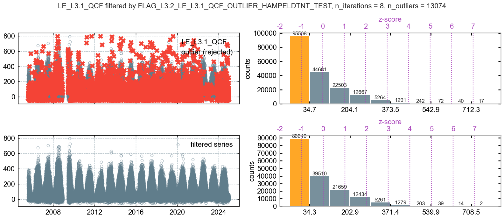
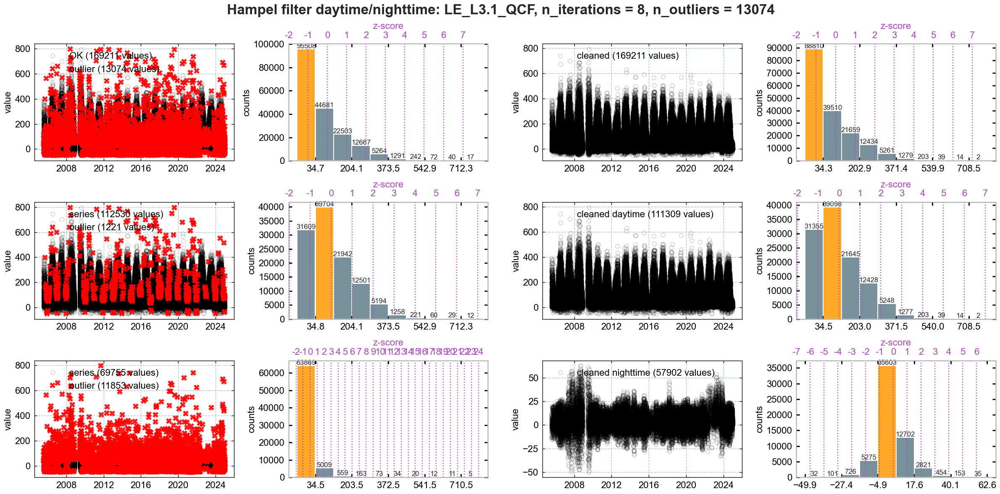
fpc.level32_addflag()
++Added flag column FLAG_L3.2_LE_L3.1_QCF_OUTLIER_HAMPELDTNT_TEST to flag data
Outlier flag: z-score across all data#
# from diive.pkgs.outlierdetection.zscore import zScore
# help(zScore)
# THRES_ZSCORE = 6
# fpc.level32_flag_outliers_zscore_test(thres_zscore=THRES_ZSCORE, showplot=True, verbose=True, repeat=True)
# fpc.level32_addflag()
Outlier flag: Hampel filter#
Recommended filter
Is slow compared to other filters:
tested with 1 year of 30MIN time resolution data and it needed approx. 33 seconds on a fast desktop computer
tested with 19 years of 30MIN time resolution data and it needed approx. 20 minutes on a fast desktop computer
# from diive.pkgs.outlierdetection.hampel import Hampel
# help(Hampel)
# WINDOW_LENGTH = 48 * 13
# N_SIGMA = 6
# %%time
# fpc.level32_flag_outliers_hampel_test(window_length=WINDOW_LENGTH, n_sigma=N_SIGMA, showplot=True, verbose=True, repeat=True)
# fpc.level32_addflag()
Outlier flag: z-score over all data, separate for daytime and nighttime#
# from diive.pkgs.outlierdetection.zscore import zScoreDaytimeNighttime
# help(zScoreDaytimeNighttime)
# THRES_ZSCORE = 5
# fpc.level32_flag_outliers_zscore_dtnt_test(thres_zscore=THRES_ZSCORE, showplot=True, verbose=True, repeat=True)
# fpc.level32_addflag()
Outlier flag: Rolling z-score over all data#
# from diive.pkgs.outlierdetection.zscore import zScoreRolling
# help(zScoreRolling)
# THRES_ZSCORE = 5.5
# WINSIZE = 48 * 13
# fpc.level32_flag_outliers_zscore_rolling_test(winsize=WINSIZE, thres_zscore=THRES_ZSCORE, showplot=True, verbose=True, repeat=True)
# fpc.level32_addflag()
Outlier flag: Local standard deviation, with rolling median and rolling standard deviation#
# from diive.pkgs.outlierdetection.localsd import LocalSD
# help(LocalSD)
# N_SD = 4.5
# WINSIZE = 48 * 9
# fpc.level32_flag_outliers_localsd_test(n_sd=N_SD, winsize=WINSIZE, constant_sd=False, showplot=True, verbose=True, repeat=True)
# fpc.level32_addflag()
Outlier flag: Local standard deviation, with rolling median and constant standard deviation#
keep standard deviation constant by setting parameter
constant_sd=True
N_SD = 4.5
WINSIZE = 48 * 13
fpc.level32_flag_outliers_localsd_test(n_sd=N_SD, winsize=WINSIZE, constant_sd=True, showplot=True, verbose=True, repeat=True)
[LocalSD] running LocalSD ...
ITERATION#1: Total found outliers: 50 values
ITERATION#2: Total found outliers: 5 values
ITERATION#3: Total found outliers: 0 values
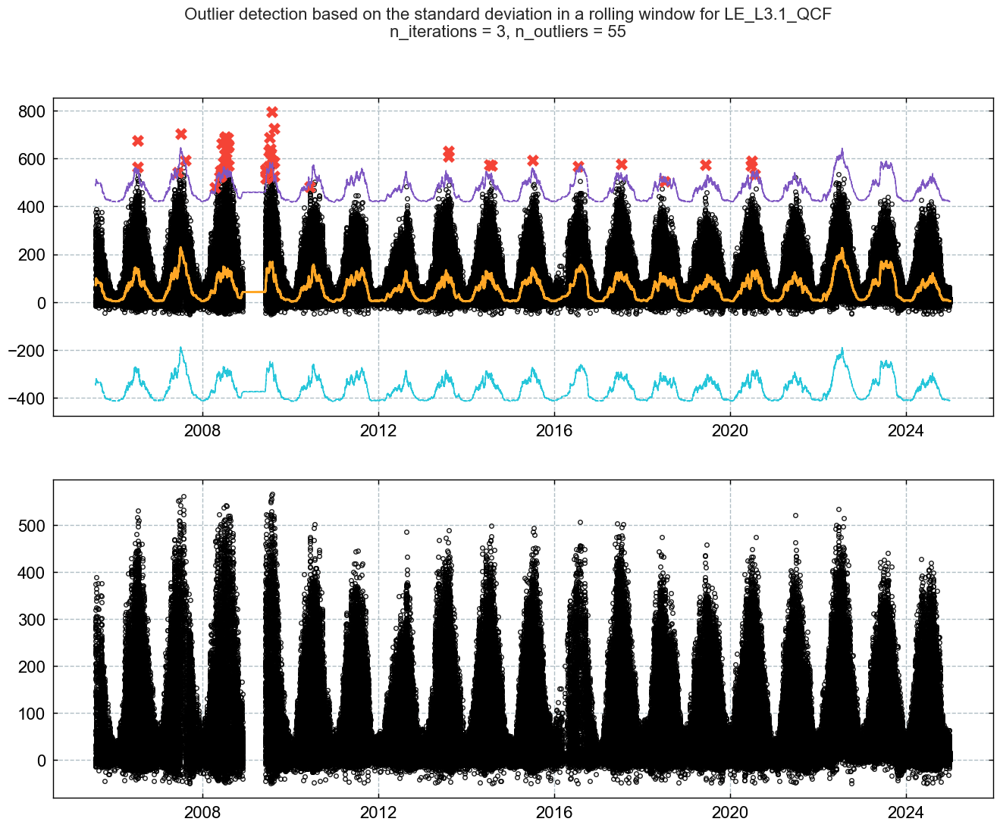
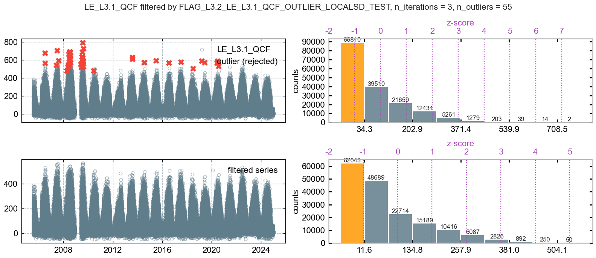
fpc.level32_addflag()
++Added flag column FLAG_L3.2_LE_L3.1_QCF_OUTLIER_LOCALSD_TEST to flag data
Outlier flag: Increments z-score#
# from diive.pkgs.outlierdetection.incremental import zScoreIncrements
# help(zScoreIncrements)
# THRES_ZSCORE = 4
# fpc.level32_flag_outliers_increments_zcore_test(thres_zscore=THRES_ZSCORE, showplot=True, verbose=True, repeat=True)
# fpc.level32_addflag()
Outlier flag: Local outlier factor, daytime/nighttime#
Test is run separately for daytime and nighttime data
Description of local outlier factor: here
# from diive.pkgs.outlierdetection.lof import LocalOutlierFactorDaytimeNighttime
# help(LocalOutlierFactorDaytimeNighttime)
N_NEIGHBORS = 50
CONTAMINATION = None
fpc.level32_flag_outliers_lof_dtnt_test(n_neighbors=N_NEIGHBORS, contamination=CONTAMINATION, showplot=True, verbose=True, repeat=False, n_jobs=-1)
[LocalOutlierFactorDaytimeNighttime] running LocalOutlierFactorDaytimeNighttime ...
ITERATION#1
Total found outliers: 14 values (daytime)
Total found outliers: 21 values (nighttime)
Total found outliers: 35 values (daytime+nighttime)
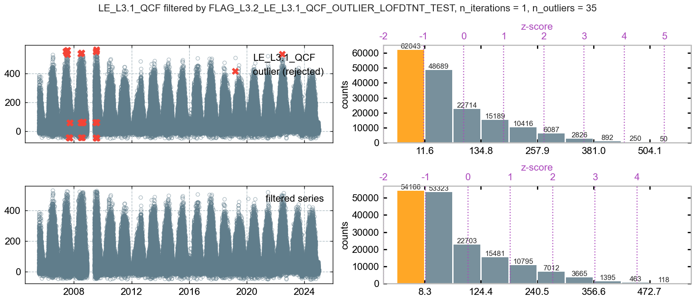
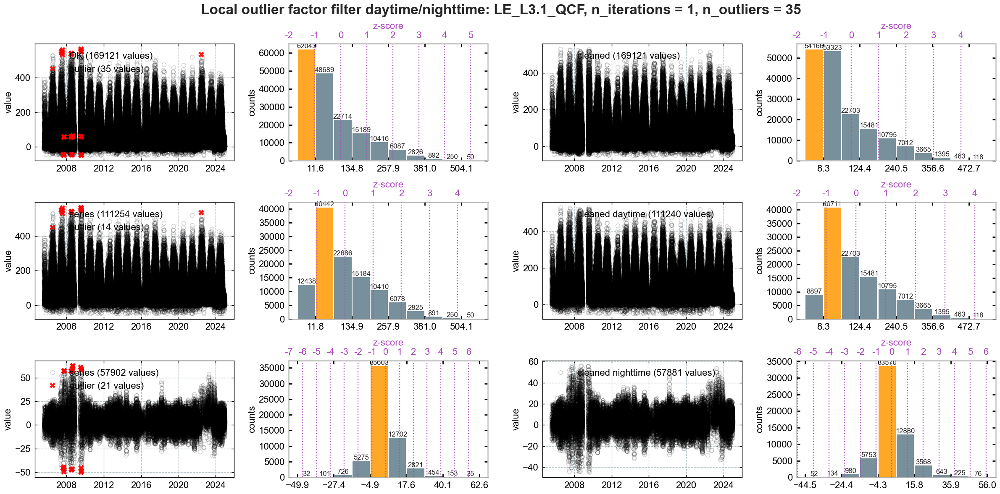
fpc.level32_addflag()
++Added flag column FLAG_L3.2_LE_L3.1_QCF_OUTLIER_LOFDTNT_TEST to flag data
Outlier flag: Local outlier factor#
Test is run across all data
Description of local outlier factor: here
# from diive.pkgs.outlierdetection.lof import LocalOutlierFactorAllData
# help(LocalOutlierFactorAllData)
# N_NEIGHBORS = 50
# CONTAMINATION = None
# fpc.level32_flag_outliers_lof_test(n_neighbors=N_NEIGHBORS, contamination=CONTAMINATION, showplot=True, verbose=True, repeat=False, n_jobs=-1)
# fpc.level32_addflag()
Outlier flag: Absolute limits, separate for daytime and nighttime data#
# from diive.pkgs.outlierdetection.absolutelimits import AbsoluteLimitsDaytimeNighttime
# help(AbsoluteLimitsDaytimeNighttime)
# MIN_DT = -50
# MAX_DT = 50
# MIN_NT = -25
# MAX_NT = 25
# fpc.level32_flag_outliers_abslim_dtnt_test(daytime_minmax=[MIN_DT, MAX_DT], nighttime_minmax=[MIN_NT, MAX_NT], showplot=True, verbose=True)
# fpc.level32_addflag()
Outlier flag: Trim nighttime flux data#
# from diive.pkgs.outlierdetection.trim import TrimLow
# help(TrimLow)
# fpc.level32_flag_outliers_trim_low_test(trim_nighttime=True, lower_limit=-5, showplot=True, verbose=True)
# fpc.level32_addflag()
Finalize Level-3.2: Calculate overall quality flag (so far)#
fpc.finalize_level32()
++Added new column FLAG_L3.2_LE_L3.1_QCF_OUTLIER_ABSLIM_TEST.
++Added new column FLAG_L3.2_LE_L3.1_QCF_OUTLIER_MANUAL_TEST.
++Added new column FLAG_L3.2_LE_L3.1_QCF_OUTLIER_HAMPELDTNT_TEST.
++Added new column FLAG_L3.2_LE_L3.1_QCF_OUTLIER_LOCALSD_TEST.
++Added new column FLAG_L3.2_LE_L3.1_QCF_OUTLIER_LOFDTNT_TEST.
++Added new column SUM_L3.2_LE_L3.1_HARDFLAGS.
++Added new column SUM_L3.2_LE_L3.1_SOFTFLAGS.
++Added new column SUM_L3.2_LE_L3.1_FLAGS.
++Added new column FLAG_L3.2_LE_L3.1_QCF.
++Added new column LE_L3.1_L3.2_QCF.
++Added new column LE_L3.1_L3.2_QCF0.
Available Level-3.2 variables#
This shows all available Level-3.2 variables for this flux
[x for x in fpc.fpc_df.columns if 'L3.2' in x]
['FLAG_L3.2_LE_L3.1_QCF_OUTLIER_ABSLIM_TEST',
'FLAG_L3.2_LE_L3.1_QCF_OUTLIER_MANUAL_TEST',
'FLAG_L3.2_LE_L3.1_QCF_OUTLIER_HAMPELDTNT_TEST',
'FLAG_L3.2_LE_L3.1_QCF_OUTLIER_LOCALSD_TEST',
'FLAG_L3.2_LE_L3.1_QCF_OUTLIER_LOFDTNT_TEST',
'SUM_L3.2_LE_L3.1_HARDFLAGS',
'SUM_L3.2_LE_L3.1_SOFTFLAGS',
'SUM_L3.2_LE_L3.1_FLAGS',
'FLAG_L3.2_LE_L3.1_QCF',
'LE_L3.1_L3.2_QCF',
'LE_L3.1_L3.2_QCF0']
Plot filtered flux after Level-3.2#
In the four panels, from left to right:
flux after Level-3.1, before outlier removal
flux after Level-3.2, after outlier removal
sum of the individual test flags
overall flag
QCF(quality control flag), where0=best quality,1=medium quality,2=bad quality
fpc.level32_qcf.showplot_qcf_heatmaps()
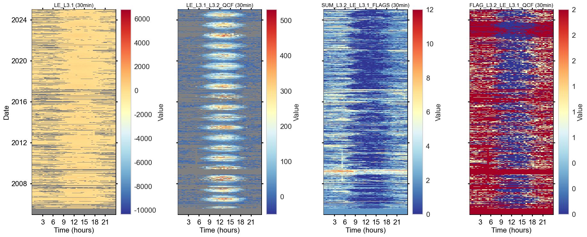
TimeSeries(series=fpc.filteredseries).plot()
# TimeSeries(series=fpc.filteredseries).plot_interactive()
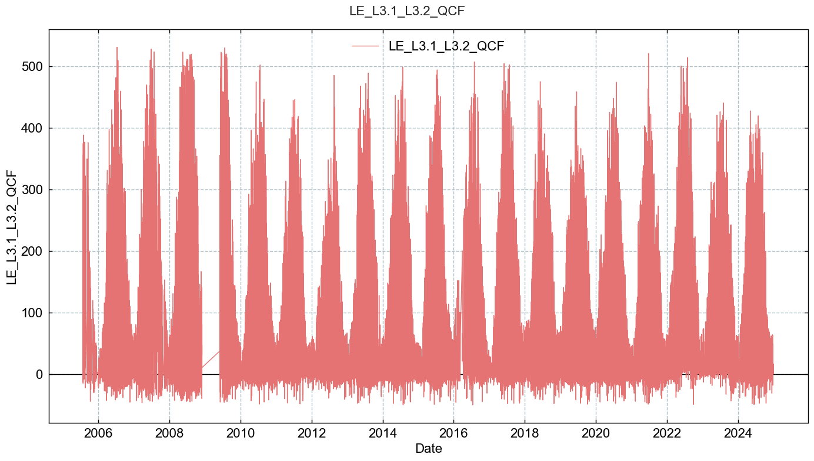
# fpc.level32_qcf.showplot_qcf_timeseries()
Reports#
fpc.level32_qcf.report_qcf_evolution()
========================================
QCF FLAG EVOLUTION
========================================
This output shows the evolution of the QCF overall quality flag
when test flags are applied sequentially to the variable LE_L3.1.
Number of LE_L3.1 records before QC: 260765
+++ FLAG_L2_LE_MISSING_TEST rejected 0 values (+0.00%) TOTALS: flag 0: 260765 (100.00%) / flag 1: 0 (0.00%) / flag 2: 0 (0.00%)
+++ FLAG_L2_LE_SSITC_TEST rejected 51943 values (+19.92%) TOTALS: flag 0: 119043 (45.65%) / flag 1: 89779 (34.43%) / flag 2: 51943 (19.92%)
+++ FLAG_L2_LE_COMPLETENESS_TEST rejected 3833 values (+1.47%) TOTALS: flag 0: 117476 (45.05%) / flag 1: 87513 (33.56%) / flag 2: 55776 (21.39%)
+++ FLAG_L2_LE_SCF_TEST rejected 129 values (+0.05%) TOTALS: flag 0: 117307 (44.99%) / flag 1: 87553 (33.58%) / flag 2: 55905 (21.44%)
+++ FLAG_L2_LE_SIGNAL_STRENGTH_TEST rejected 10092 values (+3.87%) TOTALS: flag 0: 115815 (44.41%) / flag 1: 78953 (30.28%) / flag 2: 65997 (25.31%)
+++ FLAG_L2_LE_H2O_VM97_SPIKE_HF_TEST rejected 313 values (+0.12%) TOTALS: flag 0: 115598 (44.33%) / flag 1: 78857 (30.24%) / flag 2: 66310 (25.43%)
+++ FLAG_L2_LE_H2O_VM97_AMPLITUDE_RESOLUTION_HF_TEST rejected 4557 values (+1.75%) TOTALS: flag 0: 113342 (43.47%) / flag 1: 76556 (29.36%) / flag 2: 70867 (27.18%)
+++ FLAG_L2_LE_H2O_VM97_DROPOUT_TEST rejected 0 values (+0.00%) TOTALS: flag 0: 113342 (43.47%) / flag 1: 76556 (29.36%) / flag 2: 70867 (27.18%)
+++ FLAG_L2_LE_VM97_AOA_HF_TEST rejected 4100 values (+1.57%) TOTALS: flag 0: 112183 (43.02%) / flag 1: 73615 (28.23%) / flag 2: 74967 (28.75%)
+++ FLAG_L3.2_LE_L3.1_QCF_OUTLIER_ABSLIM_TEST rejected 2379 values (+0.91%) TOTALS: flag 0: 112104 (42.99%) / flag 1: 71315 (27.35%) / flag 2: 77346 (29.66%)
+++ FLAG_L3.2_LE_L3.1_QCF_OUTLIER_MANUAL_TEST rejected 1134 values (+0.43%) TOTALS: flag 0: 111808 (42.88%) / flag 1: 70477 (27.03%) / flag 2: 78480 (30.10%)
+++ FLAG_L3.2_LE_L3.1_QCF_OUTLIER_HAMPELDTNT_TEST rejected 13074 values (+5.01%) TOTALS: flag 0: 106169 (40.71%) / flag 1: 63042 (24.18%) / flag 2: 91554 (35.11%)
+++ FLAG_L3.2_LE_L3.1_QCF_OUTLIER_LOCALSD_TEST rejected 55 values (+0.02%) TOTALS: flag 0: 106151 (40.71%) / flag 1: 63005 (24.16%) / flag 2: 91609 (35.13%)
+++ FLAG_L3.2_LE_L3.1_QCF_OUTLIER_LOFDTNT_TEST rejected 35 values (+0.01%) TOTALS: flag 0: 106137 (40.70%) / flag 1: 62984 (24.15%) / flag 2: 91644 (35.14%)
In total, 91644 (35.14%) of the available records were rejected in this step.
INFO Rejected DAYTIME records where QCF flag >= 2
INFO Rejected NIGHTTIME records where QCF flag >= 2
fpc.level32_qcf.report_qcf_series()
========================================
SUMMARY: FLAG_L3.2_LE_L3.1_QCF, QCF FLAG FOR LE_L3.1
========================================
Between 2005-01-01 00:15 and 2024-12-31 23:45 ...
Total flux records BEFORE quality checks: 260765 (74.37% of potential)
Available flux records AFTER quality checks: 169121 (64.86% of total)
Rejected flux records: 91644 (35.14% of total)
Potential flux records: 350640
Potential flux records missed: 89875 (25.63% of potential)
fpc.level32_qcf.report_qcf_flags()
========================================
REPORT: FLAGS INCL. MISSING VALUES
========================================
Stats with missing values in the dataset
FLAG_L2_LE_MISSING_TEST:
OVERALL flag 0.0: 260765 values (74.37%)
OVERALL flag 2.0: 89875 values (25.63%)
OVERALL flag missing: 0 values (0.00%)
DAYTIME flag 0.0: 140978 values (81.84%)
DAYTIME flag 2.0: 31282 values (18.16%)
DAYTIME flag missing: 0 values (0.00%)
NIGHTTIME flag 0.0: 119787 values (67.15%)
NIGHTTIME flag 2.0: 58593 values (32.85%)
NIGHTTIME flag missing: 0 values (0.00%)
FLAG_L2_LE_SSITC_TEST:
OVERALL flag 0.0: 119988 values (34.22%)
OVERALL flag 1.0: 91155 values (26.00%)
OVERALL flag 2.0: 52517 values (14.98%)
OVERALL flag missing: 86980 values (24.81%)
DAYTIME flag 0.0: 93617 values (54.35%)
DAYTIME flag 1.0: 33384 values (19.38%)
DAYTIME flag 2.0: 14995 values (8.70%)
DAYTIME flag missing: 30264 values (17.57%)
NIGHTTIME flag 0.0: 26371 values (14.78%)
NIGHTTIME flag 1.0: 57771 values (32.39%)
NIGHTTIME flag 2.0: 37522 values (21.03%)
NIGHTTIME flag missing: 56716 values (31.80%)
FLAG_L2_LE_COMPLETENESS_TEST:
OVERALL flag 0.0: 261842 values (74.68%)
OVERALL flag 1.0: 3166 values (0.90%)
OVERALL flag 2.0: 6749 values (1.92%)
OVERALL flag missing: 78883 values (22.50%)
DAYTIME flag 0.0: 139470 values (80.96%)
DAYTIME flag 1.0: 1560 values (0.91%)
DAYTIME flag 2.0: 2930 values (1.70%)
DAYTIME flag missing: 28300 values (16.43%)
NIGHTTIME flag 0.0: 122372 values (68.60%)
NIGHTTIME flag 1.0: 1606 values (0.90%)
NIGHTTIME flag 2.0: 3819 values (2.14%)
NIGHTTIME flag missing: 50583 values (28.36%)
FLAG_L2_LE_SCF_TEST:
OVERALL flag 0.0: 260030 values (74.16%)
OVERALL flag 1.0: 563 values (0.16%)
OVERALL flag 2.0: 172 values (0.05%)
OVERALL flag missing: 89875 values (25.63%)
DAYTIME flag 0.0: 140837 values (81.76%)
DAYTIME flag 1.0: 117 values (0.07%)
DAYTIME flag 2.0: 24 values (0.01%)
DAYTIME flag missing: 31282 values (18.16%)
NIGHTTIME flag 0.0: 119193 values (66.82%)
NIGHTTIME flag 1.0: 446 values (0.25%)
NIGHTTIME flag 2.0: 148 values (0.08%)
NIGHTTIME flag missing: 58593 values (32.85%)
FLAG_L2_LE_SIGNAL_STRENGTH_TEST:
OVERALL flag 0.0: 264984 values (75.57%)
OVERALL flag 2.0: 62837 values (17.92%)
OVERALL flag missing: 22819 values (6.51%)
DAYTIME flag 0.0: 144138 values (83.67%)
DAYTIME flag 2.0: 16707 values (9.70%)
DAYTIME flag missing: 11415 values (6.63%)
NIGHTTIME flag 0.0: 120846 values (67.75%)
NIGHTTIME flag 2.0: 46130 values (25.86%)
NIGHTTIME flag missing: 11404 values (6.39%)
FLAG_L2_LE_H2O_VM97_SPIKE_HF_TEST:
OVERALL flag 0.0: 329297 values (93.91%)
OVERALL flag 2.0: 414 values (0.12%)
OVERALL flag missing: 20929 values (5.97%)
DAYTIME flag 0.0: 161736 values (93.89%)
DAYTIME flag 2.0: 152 values (0.09%)
DAYTIME flag missing: 10372 values (6.02%)
NIGHTTIME flag 0.0: 167561 values (93.93%)
NIGHTTIME flag 2.0: 262 values (0.15%)
NIGHTTIME flag missing: 10557 values (5.92%)
FLAG_L2_LE_H2O_VM97_AMPLITUDE_RESOLUTION_HF_TEST:
OVERALL flag 0.0: 276837 values (78.95%)
OVERALL flag 2.0: 52874 values (15.08%)
OVERALL flag missing: 20929 values (5.97%)
DAYTIME flag 0.0: 144667 values (83.98%)
DAYTIME flag 2.0: 17221 values (10.00%)
DAYTIME flag missing: 10372 values (6.02%)
NIGHTTIME flag 0.0: 132170 values (74.09%)
NIGHTTIME flag 2.0: 35653 values (19.99%)
NIGHTTIME flag missing: 10557 values (5.92%)
FLAG_L2_LE_H2O_VM97_DROPOUT_TEST:
OVERALL flag 0.0: 329711 values (94.03%)
OVERALL flag missing: 20929 values (5.97%)
DAYTIME flag 0.0: 161888 values (93.98%)
DAYTIME flag missing: 10372 values (6.02%)
NIGHTTIME flag 0.0: 167823 values (94.08%)
NIGHTTIME flag missing: 10557 values (5.92%)
FLAG_L2_LE_VM97_AOA_HF_TEST:
OVERALL flag 0.0: 28101 values (8.01%)
OVERALL flag 2.0: 8284 values (2.36%)
OVERALL flag missing: 314255 values (89.62%)
DAYTIME flag 0.0: 13736 values (7.97%)
DAYTIME flag 2.0: 4342 values (2.52%)
DAYTIME flag missing: 154182 values (89.51%)
NIGHTTIME flag 0.0: 14365 values (8.05%)
NIGHTTIME flag 2.0: 3942 values (2.21%)
NIGHTTIME flag missing: 160073 values (89.74%)
FLAG_L2_LE_QCF:
OVERALL flag 0.0: 112183 values (31.99%)
OVERALL flag 1.0: 73615 values (20.99%)
OVERALL flag 2.0: 164842 values (47.01%)
OVERALL flag missing: 0 values (0.00%)
DAYTIME flag 0.0: 88218 values (51.21%)
DAYTIME flag 1.0: 27266 values (15.83%)
DAYTIME flag 2.0: 56776 values (32.96%)
DAYTIME flag missing: 0 values (0.00%)
NIGHTTIME flag 0.0: 23965 values (13.43%)
NIGHTTIME flag 1.0: 46349 values (25.98%)
NIGHTTIME flag 2.0: 108066 values (60.58%)
NIGHTTIME flag missing: 0 values (0.00%)
FLAG_L3.2_LE_L3.1_QCF_OUTLIER_ABSLIM_TEST:
OVERALL flag 0.0: 348261 values (99.32%)
OVERALL flag 2.0: 2379 values (0.68%)
OVERALL flag missing: 0 values (0.00%)
DAYTIME flag 0.0: 171519 values (99.57%)
DAYTIME flag 2.0: 741 values (0.43%)
DAYTIME flag missing: 0 values (0.00%)
NIGHTTIME flag 0.0: 176742 values (99.08%)
NIGHTTIME flag 2.0: 1638 values (0.92%)
NIGHTTIME flag missing: 0 values (0.00%)
FLAG_L3.2_LE_L3.1_QCF_OUTLIER_MANUAL_TEST:
OVERALL flag 0.0: 343392 values (97.93%)
OVERALL flag 2.0: 7248 values (2.07%)
OVERALL flag missing: 0 values (0.00%)
DAYTIME flag 0.0: 169187 values (98.22%)
DAYTIME flag 2.0: 3073 values (1.78%)
DAYTIME flag missing: 0 values (0.00%)
NIGHTTIME flag 0.0: 174205 values (97.66%)
NIGHTTIME flag 2.0: 4175 values (2.34%)
NIGHTTIME flag missing: 0 values (0.00%)
FLAG_L3.2_LE_L3.1_QCF_OUTLIER_HAMPELDTNT_TEST:
OVERALL flag 0.0: 337566 values (96.27%)
OVERALL flag 2.0: 13074 values (3.73%)
OVERALL flag missing: 0 values (0.00%)
DAYTIME flag 0.0: 170719 values (99.11%)
DAYTIME flag 2.0: 1541 values (0.89%)
DAYTIME flag missing: 0 values (0.00%)
NIGHTTIME flag 0.0: 166847 values (93.53%)
NIGHTTIME flag 2.0: 11533 values (6.47%)
NIGHTTIME flag missing: 0 values (0.00%)
FLAG_L3.2_LE_L3.1_QCF_OUTLIER_LOCALSD_TEST:
OVERALL flag 0.0: 350585 values (99.98%)
OVERALL flag 2.0: 55 values (0.02%)
OVERALL flag missing: 0 values (0.00%)
DAYTIME flag 0.0: 172205 values (99.97%)
DAYTIME flag 2.0: 55 values (0.03%)
DAYTIME flag missing: 0 values (0.00%)
NIGHTTIME flag 0.0: 178380 values (100.00%)
NIGHTTIME flag missing: 0 values (0.00%)
FLAG_L3.2_LE_L3.1_QCF_OUTLIER_LOFDTNT_TEST:
OVERALL flag 0.0: 350605 values (99.99%)
OVERALL flag 2.0: 35 values (0.01%)
OVERALL flag missing: 0 values (0.00%)
DAYTIME flag 0.0: 172246 values (99.99%)
DAYTIME flag 2.0: 14 values (0.01%)
DAYTIME flag missing: 0 values (0.00%)
NIGHTTIME flag 0.0: 178359 values (99.99%)
NIGHTTIME flag 2.0: 21 values (0.01%)
NIGHTTIME flag missing: 0 values (0.00%)
FLAG_L3.2_LE_L3.1_QCF:
OVERALL flag 0.0: 106137 values (30.27%)
OVERALL flag 1.0: 62984 values (17.96%)
OVERALL flag 2.0: 181519 values (51.77%)
OVERALL flag missing: 0 values (0.00%)
DAYTIME flag 0.0: 86991 values (50.50%)
DAYTIME flag 1.0: 25471 values (14.79%)
DAYTIME flag 2.0: 59798 values (34.71%)
DAYTIME flag missing: 0 values (0.00%)
NIGHTTIME flag 0.0: 19146 values (10.73%)
NIGHTTIME flag 1.0: 37513 values (21.03%)
NIGHTTIME flag 2.0: 121721 values (68.24%)
NIGHTTIME flag missing: 0 values (0.00%)
========================================
REPORT: FLAGS FOR AVAILABLE RECORDS
========================================
Stats after removal of missing values
FLAG_L2_LE_MISSING_TEST:
OVERALL flag 0.0: 260765 values (100.00%)
OVERALL flag missing: 0 values (0.00%)
DAYTIME flag 0.0: 140978 values (100.00%)
DAYTIME flag missing: 0 values (0.00%)
NIGHTTIME flag 0.0: 119787 values (100.00%)
NIGHTTIME flag missing: 0 values (0.00%)
FLAG_L2_LE_SSITC_TEST:
OVERALL flag 0.0: 119043 values (45.65%)
OVERALL flag 1.0: 89779 values (34.43%)
OVERALL flag 2.0: 51943 values (19.92%)
OVERALL flag missing: 0 values (0.00%)
DAYTIME flag 0.0: 93046 values (66.00%)
DAYTIME flag 1.0: 33035 values (23.43%)
DAYTIME flag 2.0: 14897 values (10.57%)
DAYTIME flag missing: 0 values (0.00%)
NIGHTTIME flag 0.0: 25997 values (21.70%)
NIGHTTIME flag 1.0: 56744 values (47.37%)
NIGHTTIME flag 2.0: 37046 values (30.93%)
NIGHTTIME flag missing: 0 values (0.00%)
FLAG_L2_LE_COMPLETENESS_TEST:
OVERALL flag 0.0: 251757 values (96.55%)
OVERALL flag 1.0: 2959 values (1.13%)
OVERALL flag 2.0: 6049 values (2.32%)
OVERALL flag missing: 0 values (0.00%)
DAYTIME flag 0.0: 136751 values (97.00%)
DAYTIME flag 1.0: 1502 values (1.07%)
DAYTIME flag 2.0: 2725 values (1.93%)
DAYTIME flag missing: 0 values (0.00%)
NIGHTTIME flag 0.0: 115006 values (96.01%)
NIGHTTIME flag 1.0: 1457 values (1.22%)
NIGHTTIME flag 2.0: 3324 values (2.77%)
NIGHTTIME flag missing: 0 values (0.00%)
FLAG_L2_LE_SCF_TEST:
OVERALL flag 0.0: 260030 values (99.72%)
OVERALL flag 1.0: 563 values (0.22%)
OVERALL flag 2.0: 172 values (0.07%)
OVERALL flag missing: 0 values (0.00%)
DAYTIME flag 0.0: 140837 values (99.90%)
DAYTIME flag 1.0: 117 values (0.08%)
DAYTIME flag 2.0: 24 values (0.02%)
DAYTIME flag missing: 0 values (0.00%)
NIGHTTIME flag 0.0: 119193 values (99.50%)
NIGHTTIME flag 1.0: 446 values (0.37%)
NIGHTTIME flag 2.0: 148 values (0.12%)
NIGHTTIME flag missing: 0 values (0.00%)
FLAG_L2_LE_SIGNAL_STRENGTH_TEST:
OVERALL flag 0.0: 243184 values (93.26%)
OVERALL flag 2.0: 17581 values (6.74%)
OVERALL flag missing: 0 values (0.00%)
DAYTIME flag 0.0: 135105 values (95.83%)
DAYTIME flag 2.0: 5873 values (4.17%)
DAYTIME flag missing: 0 values (0.00%)
NIGHTTIME flag 0.0: 108079 values (90.23%)
NIGHTTIME flag 2.0: 11708 values (9.77%)
NIGHTTIME flag missing: 0 values (0.00%)
FLAG_L2_LE_H2O_VM97_SPIKE_HF_TEST:
OVERALL flag 0.0: 260364 values (99.85%)
OVERALL flag 2.0: 401 values (0.15%)
OVERALL flag missing: 0 values (0.00%)
DAYTIME flag 0.0: 140830 values (99.90%)
DAYTIME flag 2.0: 148 values (0.10%)
DAYTIME flag missing: 0 values (0.00%)
NIGHTTIME flag 0.0: 119534 values (99.79%)
NIGHTTIME flag 2.0: 253 values (0.21%)
NIGHTTIME flag missing: 0 values (0.00%)
FLAG_L2_LE_H2O_VM97_AMPLITUDE_RESOLUTION_HF_TEST:
OVERALL flag 0.0: 252993 values (97.02%)
OVERALL flag 2.0: 7772 values (2.98%)
OVERALL flag missing: 0 values (0.00%)
DAYTIME flag 0.0: 136990 values (97.17%)
DAYTIME flag 2.0: 3988 values (2.83%)
DAYTIME flag missing: 0 values (0.00%)
NIGHTTIME flag 0.0: 116003 values (96.84%)
NIGHTTIME flag 2.0: 3784 values (3.16%)
NIGHTTIME flag missing: 0 values (0.00%)
FLAG_L2_LE_H2O_VM97_DROPOUT_TEST:
OVERALL flag 0.0: 260765 values (100.00%)
OVERALL flag missing: 0 values (0.00%)
DAYTIME flag 0.0: 140978 values (100.00%)
DAYTIME flag missing: 0 values (0.00%)
NIGHTTIME flag 0.0: 119787 values (100.00%)
NIGHTTIME flag missing: 0 values (0.00%)
FLAG_L2_LE_VM97_AOA_HF_TEST:
OVERALL flag 0.0: 20953 values (8.04%)
OVERALL flag 2.0: 6268 values (2.40%)
OVERALL flag missing: 233544 values (89.56%)
DAYTIME flag 0.0: 11349 values (8.05%)
DAYTIME flag 2.0: 3394 values (2.41%)
DAYTIME flag missing: 126235 values (89.54%)
NIGHTTIME flag 0.0: 9604 values (8.02%)
NIGHTTIME flag 2.0: 2874 values (2.40%)
NIGHTTIME flag missing: 107309 values (89.58%)
FLAG_L2_LE_QCF:
OVERALL flag 0.0: 112183 values (43.02%)
OVERALL flag 1.0: 73615 values (28.23%)
OVERALL flag 2.0: 74967 values (28.75%)
OVERALL flag missing: 0 values (0.00%)
DAYTIME flag 0.0: 88218 values (62.58%)
DAYTIME flag 1.0: 27266 values (19.34%)
DAYTIME flag 2.0: 25494 values (18.08%)
DAYTIME flag missing: 0 values (0.00%)
NIGHTTIME flag 0.0: 23965 values (20.01%)
NIGHTTIME flag 1.0: 46349 values (38.69%)
NIGHTTIME flag 2.0: 49473 values (41.30%)
NIGHTTIME flag missing: 0 values (0.00%)
FLAG_L3.2_LE_L3.1_QCF_OUTLIER_ABSLIM_TEST:
OVERALL flag 0.0: 258386 values (99.09%)
OVERALL flag 2.0: 2379 values (0.91%)
OVERALL flag missing: 0 values (0.00%)
DAYTIME flag 0.0: 140237 values (99.47%)
DAYTIME flag 2.0: 741 values (0.53%)
DAYTIME flag missing: 0 values (0.00%)
NIGHTTIME flag 0.0: 118149 values (98.63%)
NIGHTTIME flag 2.0: 1638 values (1.37%)
NIGHTTIME flag missing: 0 values (0.00%)
FLAG_L3.2_LE_L3.1_QCF_OUTLIER_MANUAL_TEST:
OVERALL flag 0.0: 255863 values (98.12%)
OVERALL flag 2.0: 4902 values (1.88%)
OVERALL flag missing: 0 values (0.00%)
DAYTIME flag 0.0: 138761 values (98.43%)
DAYTIME flag 2.0: 2217 values (1.57%)
DAYTIME flag missing: 0 values (0.00%)
NIGHTTIME flag 0.0: 117102 values (97.76%)
NIGHTTIME flag 2.0: 2685 values (2.24%)
NIGHTTIME flag missing: 0 values (0.00%)
FLAG_L3.2_LE_L3.1_QCF_OUTLIER_HAMPELDTNT_TEST:
OVERALL flag 0.0: 247691 values (94.99%)
OVERALL flag 2.0: 13074 values (5.01%)
OVERALL flag missing: 0 values (0.00%)
DAYTIME flag 0.0: 139437 values (98.91%)
DAYTIME flag 2.0: 1541 values (1.09%)
DAYTIME flag missing: 0 values (0.00%)
NIGHTTIME flag 0.0: 108254 values (90.37%)
NIGHTTIME flag 2.0: 11533 values (9.63%)
NIGHTTIME flag missing: 0 values (0.00%)
FLAG_L3.2_LE_L3.1_QCF_OUTLIER_LOCALSD_TEST:
OVERALL flag 0.0: 260710 values (99.98%)
OVERALL flag 2.0: 55 values (0.02%)
OVERALL flag missing: 0 values (0.00%)
DAYTIME flag 0.0: 140923 values (99.96%)
DAYTIME flag 2.0: 55 values (0.04%)
DAYTIME flag missing: 0 values (0.00%)
NIGHTTIME flag 0.0: 119787 values (100.00%)
NIGHTTIME flag missing: 0 values (0.00%)
FLAG_L3.2_LE_L3.1_QCF_OUTLIER_LOFDTNT_TEST:
OVERALL flag 0.0: 260730 values (99.99%)
OVERALL flag 2.0: 35 values (0.01%)
OVERALL flag missing: 0 values (0.00%)
DAYTIME flag 0.0: 140964 values (99.99%)
DAYTIME flag 2.0: 14 values (0.01%)
DAYTIME flag missing: 0 values (0.00%)
NIGHTTIME flag 0.0: 119766 values (99.98%)
NIGHTTIME flag 2.0: 21 values (0.02%)
NIGHTTIME flag missing: 0 values (0.00%)
FLAG_L3.2_LE_L3.1_QCF:
OVERALL flag 0.0: 106137 values (40.70%)
OVERALL flag 1.0: 62984 values (24.15%)
OVERALL flag 2.0: 91644 values (35.14%)
OVERALL flag missing: 0 values (0.00%)
DAYTIME flag 0.0: 86991 values (61.71%)
DAYTIME flag 1.0: 25471 values (18.07%)
DAYTIME flag 2.0: 28516 values (20.23%)
DAYTIME flag missing: 0 values (0.00%)
NIGHTTIME flag 0.0: 19146 values (15.98%)
NIGHTTIME flag 1.0: 37513 values (31.32%)
NIGHTTIME flag 2.0: 63128 values (52.70%)
NIGHTTIME flag missing: 0 values (0.00%)
Save Level-3.2 results to file#
If needed, save results so far (input data and all created variables, e.g. flags and filtered fluxes) to a file
This can be useful if e.g. USTAR filtering is not needed and gap-filling is done elsewhere (ReddyProc…)
# results_df = fpc.get_data()
# filename = "51.1_FluxProcessingChain_after-L3.3_NEE"
# results_df.to_csv(f"{filename}.csv", index=True)
# save_parquet(data=results_df, filename=filename)
Level-3.3: USTAR FILTERING#
Daytime and nighttime data are filtered based on USTAR thresholds
Example USTAR thresholds from the analysis done by FLUXNET (2005-2023) for the intensively managed grassland CH-CHA, Chamau:
CUT_16:
0.0529445CUT_50:
0.0698982CUT_84:
0.0928408
The USTAR filtering is not applied to H and LE, because it has not been proved that when there are CO2 advective fluxes, these also impact energy fluxes, specifically due to the fact that when advection is in general large (nighttime), energy fluxes are small.
USTAR_SCENARIOS = ['CUT_NONE']
USTAR_THRESHOLDS = [0]
# USTAR_SCENARIOS = ['CUT_16', 'CUT_50', 'CUT_84']
# USTAR_THRESHOLDS = [0.0529445, 0.0698982, 0.0928408]
fpc.level33_constant_ustar(thresholds=USTAR_THRESHOLDS,
threshold_labels=USTAR_SCENARIOS,
showplot=False)
[FlagSingleConstantUstarThreshold] running FlagSingleConstantUstarThreshold ...
Total found outliers for USTAR threshold _L3.3_CUT_NONE 0: 0 values
Finalize Level-3.3: Caculate overall final quality flag#
# Finalize: stores results for each USTAR scenario in a dict
fpc.finalize_level33()
Calculating overall quality flag QCF for USTAR scenario CUT_NONE...
++Added new column FLAG_L3.3_CUT_NONE_LE_L3.1_USTAR_TEST.
++Added new column SUM_L3.3_CUT_NONE_LE_L3.1_HARDFLAGS.
++Added new column SUM_L3.3_CUT_NONE_LE_L3.1_SOFTFLAGS.
++Added new column SUM_L3.3_CUT_NONE_LE_L3.1_FLAGS.
++Added new column FLAG_L3.3_CUT_NONE_LE_L3.1_QCF.
++Added new column LE_L3.1_L3.3_CUT_NONE_QCF.
++Added new column LE_L3.1_L3.3_CUT_NONE_QCF0.
Available Level-3.3 variables#
This shows all available Level-3.3 variables for this flux
[x for x in fpc.fpc_df.columns if 'L3.3' in x]
['FLAG_L3.3_CUT_NONE_LE_L3.1_USTAR_TEST',
'SUM_L3.3_CUT_NONE_LE_L3.1_HARDFLAGS',
'SUM_L3.3_CUT_NONE_LE_L3.1_SOFTFLAGS',
'SUM_L3.3_CUT_NONE_LE_L3.1_FLAGS',
'FLAG_L3.3_CUT_NONE_LE_L3.1_QCF',
'LE_L3.1_L3.3_CUT_NONE_QCF',
'LE_L3.1_L3.3_CUT_NONE_QCF0']
Plot filtered flux after Level-3.3#
In the four panels, from left to right:
flux after Level-3.1, before outlier removal and USTAR filtering
flux after Level-3.3, after outlier removal and USTAR filtering
sum of the individual test flags
overall flag
QCF(quality control flag), where0=best quality,1=medium quality,2=bad quality
for key, value in fpc.level33_qcf.items():
# TimeSeries(series=fpc.fpc_df[fluxhq]).plot_interactive()
# TimeSeries(series=fpc.fpc_df[FLUXVAR33QCF[key].name]).plot()
fpc.level33_qcf[key].showplot_qcf_heatmaps()
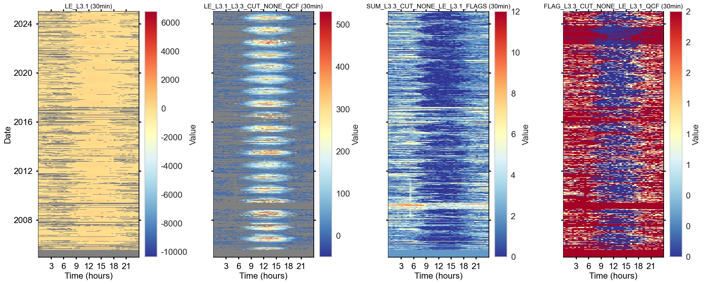
Reports#
for key, value in fpc.level33_qcf.items():
fpc.level33_qcf[key].report_qcf_evolution()
========================================
QCF FLAG EVOLUTION
========================================
This output shows the evolution of the QCF overall quality flag
when test flags are applied sequentially to the variable LE_L3.1.
Number of LE_L3.1 records before QC: 260765
+++ FLAG_L2_LE_MISSING_TEST rejected 0 values (+0.00%) TOTALS: flag 0: 260765 (100.00%) / flag 1: 0 (0.00%) / flag 2: 0 (0.00%)
+++ FLAG_L2_LE_SSITC_TEST rejected 51943 values (+19.92%) TOTALS: flag 0: 119043 (45.65%) / flag 1: 89779 (34.43%) / flag 2: 51943 (19.92%)
+++ FLAG_L2_LE_COMPLETENESS_TEST rejected 3833 values (+1.47%) TOTALS: flag 0: 117476 (45.05%) / flag 1: 87513 (33.56%) / flag 2: 55776 (21.39%)
+++ FLAG_L2_LE_SCF_TEST rejected 129 values (+0.05%) TOTALS: flag 0: 117307 (44.99%) / flag 1: 87553 (33.58%) / flag 2: 55905 (21.44%)
+++ FLAG_L2_LE_SIGNAL_STRENGTH_TEST rejected 10092 values (+3.87%) TOTALS: flag 0: 115815 (44.41%) / flag 1: 78953 (30.28%) / flag 2: 65997 (25.31%)
+++ FLAG_L2_LE_H2O_VM97_SPIKE_HF_TEST rejected 313 values (+0.12%) TOTALS: flag 0: 115598 (44.33%) / flag 1: 78857 (30.24%) / flag 2: 66310 (25.43%)
+++ FLAG_L2_LE_H2O_VM97_AMPLITUDE_RESOLUTION_HF_TEST rejected 4557 values (+1.75%) TOTALS: flag 0: 113342 (43.47%) / flag 1: 76556 (29.36%) / flag 2: 70867 (27.18%)
+++ FLAG_L2_LE_H2O_VM97_DROPOUT_TEST rejected 0 values (+0.00%) TOTALS: flag 0: 113342 (43.47%) / flag 1: 76556 (29.36%) / flag 2: 70867 (27.18%)
+++ FLAG_L2_LE_VM97_AOA_HF_TEST rejected 4100 values (+1.57%) TOTALS: flag 0: 112183 (43.02%) / flag 1: 73615 (28.23%) / flag 2: 74967 (28.75%)
+++ FLAG_L3.2_LE_L3.1_QCF_OUTLIER_ABSLIM_TEST rejected 2379 values (+0.91%) TOTALS: flag 0: 112104 (42.99%) / flag 1: 71315 (27.35%) / flag 2: 77346 (29.66%)
+++ FLAG_L3.2_LE_L3.1_QCF_OUTLIER_MANUAL_TEST rejected 1134 values (+0.43%) TOTALS: flag 0: 111808 (42.88%) / flag 1: 70477 (27.03%) / flag 2: 78480 (30.10%)
+++ FLAG_L3.2_LE_L3.1_QCF_OUTLIER_HAMPELDTNT_TEST rejected 13074 values (+5.01%) TOTALS: flag 0: 106169 (40.71%) / flag 1: 63042 (24.18%) / flag 2: 91554 (35.11%)
+++ FLAG_L3.2_LE_L3.1_QCF_OUTLIER_LOCALSD_TEST rejected 55 values (+0.02%) TOTALS: flag 0: 106151 (40.71%) / flag 1: 63005 (24.16%) / flag 2: 91609 (35.13%)
+++ FLAG_L3.2_LE_L3.1_QCF_OUTLIER_LOFDTNT_TEST rejected 35 values (+0.01%) TOTALS: flag 0: 106137 (40.70%) / flag 1: 62984 (24.15%) / flag 2: 91644 (35.14%)
+++ FLAG_L3.3_CUT_NONE_LE_L3.1_USTAR_TEST rejected 0 values (+0.00%) TOTALS: flag 0: 106137 (40.70%) / flag 1: 62984 (24.15%) / flag 2: 91644 (35.14%)
In total, 91644 (35.14%) of the available records were rejected in this step.
INFO Rejected DAYTIME records where QCF flag >= 2
INFO Rejected NIGHTTIME records where QCF flag >= 2
for key, value in fpc.level33_qcf.items():
fpc.level33_qcf[key].report_qcf_series()
========================================
SUMMARY: FLAG_L3.3_CUT_NONE_LE_L3.1_QCF, QCF FLAG FOR LE_L3.1
========================================
Between 2005-01-01 00:15 and 2024-12-31 23:45 ...
Total flux records BEFORE quality checks: 260765 (74.37% of potential)
Available flux records AFTER quality checks: 169121 (64.86% of total)
Rejected flux records: 91644 (35.14% of total)
Potential flux records: 350640
Potential flux records missed: 89875 (25.63% of potential)
for key, value in fpc.level33_qcf.items():
fpc.level33_qcf[key].report_qcf_flags()
========================================
REPORT: FLAGS INCL. MISSING VALUES
========================================
Stats with missing values in the dataset
FLAG_L2_LE_MISSING_TEST:
OVERALL flag 0.0: 260765 values (74.37%)
OVERALL flag 2.0: 89875 values (25.63%)
OVERALL flag missing: 0 values (0.00%)
DAYTIME flag 0.0: 140978 values (81.84%)
DAYTIME flag 2.0: 31282 values (18.16%)
DAYTIME flag missing: 0 values (0.00%)
NIGHTTIME flag 0.0: 119787 values (67.15%)
NIGHTTIME flag 2.0: 58593 values (32.85%)
NIGHTTIME flag missing: 0 values (0.00%)
FLAG_L2_LE_SSITC_TEST:
OVERALL flag 0.0: 119988 values (34.22%)
OVERALL flag 1.0: 91155 values (26.00%)
OVERALL flag 2.0: 52517 values (14.98%)
OVERALL flag missing: 86980 values (24.81%)
DAYTIME flag 0.0: 93617 values (54.35%)
DAYTIME flag 1.0: 33384 values (19.38%)
DAYTIME flag 2.0: 14995 values (8.70%)
DAYTIME flag missing: 30264 values (17.57%)
NIGHTTIME flag 0.0: 26371 values (14.78%)
NIGHTTIME flag 1.0: 57771 values (32.39%)
NIGHTTIME flag 2.0: 37522 values (21.03%)
NIGHTTIME flag missing: 56716 values (31.80%)
FLAG_L2_LE_COMPLETENESS_TEST:
OVERALL flag 0.0: 261842 values (74.68%)
OVERALL flag 1.0: 3166 values (0.90%)
OVERALL flag 2.0: 6749 values (1.92%)
OVERALL flag missing: 78883 values (22.50%)
DAYTIME flag 0.0: 139470 values (80.96%)
DAYTIME flag 1.0: 1560 values (0.91%)
DAYTIME flag 2.0: 2930 values (1.70%)
DAYTIME flag missing: 28300 values (16.43%)
NIGHTTIME flag 0.0: 122372 values (68.60%)
NIGHTTIME flag 1.0: 1606 values (0.90%)
NIGHTTIME flag 2.0: 3819 values (2.14%)
NIGHTTIME flag missing: 50583 values (28.36%)
FLAG_L2_LE_SCF_TEST:
OVERALL flag 0.0: 260030 values (74.16%)
OVERALL flag 1.0: 563 values (0.16%)
OVERALL flag 2.0: 172 values (0.05%)
OVERALL flag missing: 89875 values (25.63%)
DAYTIME flag 0.0: 140837 values (81.76%)
DAYTIME flag 1.0: 117 values (0.07%)
DAYTIME flag 2.0: 24 values (0.01%)
DAYTIME flag missing: 31282 values (18.16%)
NIGHTTIME flag 0.0: 119193 values (66.82%)
NIGHTTIME flag 1.0: 446 values (0.25%)
NIGHTTIME flag 2.0: 148 values (0.08%)
NIGHTTIME flag missing: 58593 values (32.85%)
FLAG_L2_LE_SIGNAL_STRENGTH_TEST:
OVERALL flag 0.0: 264984 values (75.57%)
OVERALL flag 2.0: 62837 values (17.92%)
OVERALL flag missing: 22819 values (6.51%)
DAYTIME flag 0.0: 144138 values (83.67%)
DAYTIME flag 2.0: 16707 values (9.70%)
DAYTIME flag missing: 11415 values (6.63%)
NIGHTTIME flag 0.0: 120846 values (67.75%)
NIGHTTIME flag 2.0: 46130 values (25.86%)
NIGHTTIME flag missing: 11404 values (6.39%)
FLAG_L2_LE_H2O_VM97_SPIKE_HF_TEST:
OVERALL flag 0.0: 329297 values (93.91%)
OVERALL flag 2.0: 414 values (0.12%)
OVERALL flag missing: 20929 values (5.97%)
DAYTIME flag 0.0: 161736 values (93.89%)
DAYTIME flag 2.0: 152 values (0.09%)
DAYTIME flag missing: 10372 values (6.02%)
NIGHTTIME flag 0.0: 167561 values (93.93%)
NIGHTTIME flag 2.0: 262 values (0.15%)
NIGHTTIME flag missing: 10557 values (5.92%)
FLAG_L2_LE_H2O_VM97_AMPLITUDE_RESOLUTION_HF_TEST:
OVERALL flag 0.0: 276837 values (78.95%)
OVERALL flag 2.0: 52874 values (15.08%)
OVERALL flag missing: 20929 values (5.97%)
DAYTIME flag 0.0: 144667 values (83.98%)
DAYTIME flag 2.0: 17221 values (10.00%)
DAYTIME flag missing: 10372 values (6.02%)
NIGHTTIME flag 0.0: 132170 values (74.09%)
NIGHTTIME flag 2.0: 35653 values (19.99%)
NIGHTTIME flag missing: 10557 values (5.92%)
FLAG_L2_LE_H2O_VM97_DROPOUT_TEST:
OVERALL flag 0.0: 329711 values (94.03%)
OVERALL flag missing: 20929 values (5.97%)
DAYTIME flag 0.0: 161888 values (93.98%)
DAYTIME flag missing: 10372 values (6.02%)
NIGHTTIME flag 0.0: 167823 values (94.08%)
NIGHTTIME flag missing: 10557 values (5.92%)
FLAG_L2_LE_VM97_AOA_HF_TEST:
OVERALL flag 0.0: 28101 values (8.01%)
OVERALL flag 2.0: 8284 values (2.36%)
OVERALL flag missing: 314255 values (89.62%)
DAYTIME flag 0.0: 13736 values (7.97%)
DAYTIME flag 2.0: 4342 values (2.52%)
DAYTIME flag missing: 154182 values (89.51%)
NIGHTTIME flag 0.0: 14365 values (8.05%)
NIGHTTIME flag 2.0: 3942 values (2.21%)
NIGHTTIME flag missing: 160073 values (89.74%)
FLAG_L2_LE_QCF:
OVERALL flag 0.0: 112183 values (31.99%)
OVERALL flag 1.0: 73615 values (20.99%)
OVERALL flag 2.0: 164842 values (47.01%)
OVERALL flag missing: 0 values (0.00%)
DAYTIME flag 0.0: 88218 values (51.21%)
DAYTIME flag 1.0: 27266 values (15.83%)
DAYTIME flag 2.0: 56776 values (32.96%)
DAYTIME flag missing: 0 values (0.00%)
NIGHTTIME flag 0.0: 23965 values (13.43%)
NIGHTTIME flag 1.0: 46349 values (25.98%)
NIGHTTIME flag 2.0: 108066 values (60.58%)
NIGHTTIME flag missing: 0 values (0.00%)
FLAG_L3.2_LE_L3.1_QCF_OUTLIER_ABSLIM_TEST:
OVERALL flag 0.0: 348261 values (99.32%)
OVERALL flag 2.0: 2379 values (0.68%)
OVERALL flag missing: 0 values (0.00%)
DAYTIME flag 0.0: 171519 values (99.57%)
DAYTIME flag 2.0: 741 values (0.43%)
DAYTIME flag missing: 0 values (0.00%)
NIGHTTIME flag 0.0: 176742 values (99.08%)
NIGHTTIME flag 2.0: 1638 values (0.92%)
NIGHTTIME flag missing: 0 values (0.00%)
FLAG_L3.2_LE_L3.1_QCF_OUTLIER_MANUAL_TEST:
OVERALL flag 0.0: 343392 values (97.93%)
OVERALL flag 2.0: 7248 values (2.07%)
OVERALL flag missing: 0 values (0.00%)
DAYTIME flag 0.0: 169187 values (98.22%)
DAYTIME flag 2.0: 3073 values (1.78%)
DAYTIME flag missing: 0 values (0.00%)
NIGHTTIME flag 0.0: 174205 values (97.66%)
NIGHTTIME flag 2.0: 4175 values (2.34%)
NIGHTTIME flag missing: 0 values (0.00%)
FLAG_L3.2_LE_L3.1_QCF_OUTLIER_HAMPELDTNT_TEST:
OVERALL flag 0.0: 337566 values (96.27%)
OVERALL flag 2.0: 13074 values (3.73%)
OVERALL flag missing: 0 values (0.00%)
DAYTIME flag 0.0: 170719 values (99.11%)
DAYTIME flag 2.0: 1541 values (0.89%)
DAYTIME flag missing: 0 values (0.00%)
NIGHTTIME flag 0.0: 166847 values (93.53%)
NIGHTTIME flag 2.0: 11533 values (6.47%)
NIGHTTIME flag missing: 0 values (0.00%)
FLAG_L3.2_LE_L3.1_QCF_OUTLIER_LOCALSD_TEST:
OVERALL flag 0.0: 350585 values (99.98%)
OVERALL flag 2.0: 55 values (0.02%)
OVERALL flag missing: 0 values (0.00%)
DAYTIME flag 0.0: 172205 values (99.97%)
DAYTIME flag 2.0: 55 values (0.03%)
DAYTIME flag missing: 0 values (0.00%)
NIGHTTIME flag 0.0: 178380 values (100.00%)
NIGHTTIME flag missing: 0 values (0.00%)
FLAG_L3.2_LE_L3.1_QCF_OUTLIER_LOFDTNT_TEST:
OVERALL flag 0.0: 350605 values (99.99%)
OVERALL flag 2.0: 35 values (0.01%)
OVERALL flag missing: 0 values (0.00%)
DAYTIME flag 0.0: 172246 values (99.99%)
DAYTIME flag 2.0: 14 values (0.01%)
DAYTIME flag missing: 0 values (0.00%)
NIGHTTIME flag 0.0: 178359 values (99.99%)
NIGHTTIME flag 2.0: 21 values (0.01%)
NIGHTTIME flag missing: 0 values (0.00%)
FLAG_L3.2_LE_L3.1_QCF:
OVERALL flag 0.0: 106137 values (30.27%)
OVERALL flag 1.0: 62984 values (17.96%)
OVERALL flag 2.0: 181519 values (51.77%)
OVERALL flag missing: 0 values (0.00%)
DAYTIME flag 0.0: 86991 values (50.50%)
DAYTIME flag 1.0: 25471 values (14.79%)
DAYTIME flag 2.0: 59798 values (34.71%)
DAYTIME flag missing: 0 values (0.00%)
NIGHTTIME flag 0.0: 19146 values (10.73%)
NIGHTTIME flag 1.0: 37513 values (21.03%)
NIGHTTIME flag 2.0: 121721 values (68.24%)
NIGHTTIME flag missing: 0 values (0.00%)
FLAG_L3.3_CUT_NONE_LE_L3.1_USTAR_TEST:
OVERALL flag 0.0: 350640 values (100.00%)
OVERALL flag missing: 0 values (0.00%)
DAYTIME flag 0.0: 172260 values (100.00%)
DAYTIME flag missing: 0 values (0.00%)
NIGHTTIME flag 0.0: 178380 values (100.00%)
NIGHTTIME flag missing: 0 values (0.00%)
FLAG_L3.3_CUT_NONE_LE_L3.1_QCF:
OVERALL flag 0.0: 106137 values (30.27%)
OVERALL flag 1.0: 62984 values (17.96%)
OVERALL flag 2.0: 181519 values (51.77%)
OVERALL flag missing: 0 values (0.00%)
DAYTIME flag 0.0: 86991 values (50.50%)
DAYTIME flag 1.0: 25471 values (14.79%)
DAYTIME flag 2.0: 59798 values (34.71%)
DAYTIME flag missing: 0 values (0.00%)
NIGHTTIME flag 0.0: 19146 values (10.73%)
NIGHTTIME flag 1.0: 37513 values (21.03%)
NIGHTTIME flag 2.0: 121721 values (68.24%)
NIGHTTIME flag missing: 0 values (0.00%)
========================================
REPORT: FLAGS FOR AVAILABLE RECORDS
========================================
Stats after removal of missing values
FLAG_L2_LE_MISSING_TEST:
OVERALL flag 0.0: 260765 values (100.00%)
OVERALL flag missing: 0 values (0.00%)
DAYTIME flag 0.0: 140978 values (100.00%)
DAYTIME flag missing: 0 values (0.00%)
NIGHTTIME flag 0.0: 119787 values (100.00%)
NIGHTTIME flag missing: 0 values (0.00%)
FLAG_L2_LE_SSITC_TEST:
OVERALL flag 0.0: 119043 values (45.65%)
OVERALL flag 1.0: 89779 values (34.43%)
OVERALL flag 2.0: 51943 values (19.92%)
OVERALL flag missing: 0 values (0.00%)
DAYTIME flag 0.0: 93046 values (66.00%)
DAYTIME flag 1.0: 33035 values (23.43%)
DAYTIME flag 2.0: 14897 values (10.57%)
DAYTIME flag missing: 0 values (0.00%)
NIGHTTIME flag 0.0: 25997 values (21.70%)
NIGHTTIME flag 1.0: 56744 values (47.37%)
NIGHTTIME flag 2.0: 37046 values (30.93%)
NIGHTTIME flag missing: 0 values (0.00%)
FLAG_L2_LE_COMPLETENESS_TEST:
OVERALL flag 0.0: 251757 values (96.55%)
OVERALL flag 1.0: 2959 values (1.13%)
OVERALL flag 2.0: 6049 values (2.32%)
OVERALL flag missing: 0 values (0.00%)
DAYTIME flag 0.0: 136751 values (97.00%)
DAYTIME flag 1.0: 1502 values (1.07%)
DAYTIME flag 2.0: 2725 values (1.93%)
DAYTIME flag missing: 0 values (0.00%)
NIGHTTIME flag 0.0: 115006 values (96.01%)
NIGHTTIME flag 1.0: 1457 values (1.22%)
NIGHTTIME flag 2.0: 3324 values (2.77%)
NIGHTTIME flag missing: 0 values (0.00%)
FLAG_L2_LE_SCF_TEST:
OVERALL flag 0.0: 260030 values (99.72%)
OVERALL flag 1.0: 563 values (0.22%)
OVERALL flag 2.0: 172 values (0.07%)
OVERALL flag missing: 0 values (0.00%)
DAYTIME flag 0.0: 140837 values (99.90%)
DAYTIME flag 1.0: 117 values (0.08%)
DAYTIME flag 2.0: 24 values (0.02%)
DAYTIME flag missing: 0 values (0.00%)
NIGHTTIME flag 0.0: 119193 values (99.50%)
NIGHTTIME flag 1.0: 446 values (0.37%)
NIGHTTIME flag 2.0: 148 values (0.12%)
NIGHTTIME flag missing: 0 values (0.00%)
FLAG_L2_LE_SIGNAL_STRENGTH_TEST:
OVERALL flag 0.0: 243184 values (93.26%)
OVERALL flag 2.0: 17581 values (6.74%)
OVERALL flag missing: 0 values (0.00%)
DAYTIME flag 0.0: 135105 values (95.83%)
DAYTIME flag 2.0: 5873 values (4.17%)
DAYTIME flag missing: 0 values (0.00%)
NIGHTTIME flag 0.0: 108079 values (90.23%)
NIGHTTIME flag 2.0: 11708 values (9.77%)
NIGHTTIME flag missing: 0 values (0.00%)
FLAG_L2_LE_H2O_VM97_SPIKE_HF_TEST:
OVERALL flag 0.0: 260364 values (99.85%)
OVERALL flag 2.0: 401 values (0.15%)
OVERALL flag missing: 0 values (0.00%)
DAYTIME flag 0.0: 140830 values (99.90%)
DAYTIME flag 2.0: 148 values (0.10%)
DAYTIME flag missing: 0 values (0.00%)
NIGHTTIME flag 0.0: 119534 values (99.79%)
NIGHTTIME flag 2.0: 253 values (0.21%)
NIGHTTIME flag missing: 0 values (0.00%)
FLAG_L2_LE_H2O_VM97_AMPLITUDE_RESOLUTION_HF_TEST:
OVERALL flag 0.0: 252993 values (97.02%)
OVERALL flag 2.0: 7772 values (2.98%)
OVERALL flag missing: 0 values (0.00%)
DAYTIME flag 0.0: 136990 values (97.17%)
DAYTIME flag 2.0: 3988 values (2.83%)
DAYTIME flag missing: 0 values (0.00%)
NIGHTTIME flag 0.0: 116003 values (96.84%)
NIGHTTIME flag 2.0: 3784 values (3.16%)
NIGHTTIME flag missing: 0 values (0.00%)
FLAG_L2_LE_H2O_VM97_DROPOUT_TEST:
OVERALL flag 0.0: 260765 values (100.00%)
OVERALL flag missing: 0 values (0.00%)
DAYTIME flag 0.0: 140978 values (100.00%)
DAYTIME flag missing: 0 values (0.00%)
NIGHTTIME flag 0.0: 119787 values (100.00%)
NIGHTTIME flag missing: 0 values (0.00%)
FLAG_L2_LE_VM97_AOA_HF_TEST:
OVERALL flag 0.0: 20953 values (8.04%)
OVERALL flag 2.0: 6268 values (2.40%)
OVERALL flag missing: 233544 values (89.56%)
DAYTIME flag 0.0: 11349 values (8.05%)
DAYTIME flag 2.0: 3394 values (2.41%)
DAYTIME flag missing: 126235 values (89.54%)
NIGHTTIME flag 0.0: 9604 values (8.02%)
NIGHTTIME flag 2.0: 2874 values (2.40%)
NIGHTTIME flag missing: 107309 values (89.58%)
FLAG_L2_LE_QCF:
OVERALL flag 0.0: 112183 values (43.02%)
OVERALL flag 1.0: 73615 values (28.23%)
OVERALL flag 2.0: 74967 values (28.75%)
OVERALL flag missing: 0 values (0.00%)
DAYTIME flag 0.0: 88218 values (62.58%)
DAYTIME flag 1.0: 27266 values (19.34%)
DAYTIME flag 2.0: 25494 values (18.08%)
DAYTIME flag missing: 0 values (0.00%)
NIGHTTIME flag 0.0: 23965 values (20.01%)
NIGHTTIME flag 1.0: 46349 values (38.69%)
NIGHTTIME flag 2.0: 49473 values (41.30%)
NIGHTTIME flag missing: 0 values (0.00%)
FLAG_L3.2_LE_L3.1_QCF_OUTLIER_ABSLIM_TEST:
OVERALL flag 0.0: 258386 values (99.09%)
OVERALL flag 2.0: 2379 values (0.91%)
OVERALL flag missing: 0 values (0.00%)
DAYTIME flag 0.0: 140237 values (99.47%)
DAYTIME flag 2.0: 741 values (0.53%)
DAYTIME flag missing: 0 values (0.00%)
NIGHTTIME flag 0.0: 118149 values (98.63%)
NIGHTTIME flag 2.0: 1638 values (1.37%)
NIGHTTIME flag missing: 0 values (0.00%)
FLAG_L3.2_LE_L3.1_QCF_OUTLIER_MANUAL_TEST:
OVERALL flag 0.0: 255863 values (98.12%)
OVERALL flag 2.0: 4902 values (1.88%)
OVERALL flag missing: 0 values (0.00%)
DAYTIME flag 0.0: 138761 values (98.43%)
DAYTIME flag 2.0: 2217 values (1.57%)
DAYTIME flag missing: 0 values (0.00%)
NIGHTTIME flag 0.0: 117102 values (97.76%)
NIGHTTIME flag 2.0: 2685 values (2.24%)
NIGHTTIME flag missing: 0 values (0.00%)
FLAG_L3.2_LE_L3.1_QCF_OUTLIER_HAMPELDTNT_TEST:
OVERALL flag 0.0: 247691 values (94.99%)
OVERALL flag 2.0: 13074 values (5.01%)
OVERALL flag missing: 0 values (0.00%)
DAYTIME flag 0.0: 139437 values (98.91%)
DAYTIME flag 2.0: 1541 values (1.09%)
DAYTIME flag missing: 0 values (0.00%)
NIGHTTIME flag 0.0: 108254 values (90.37%)
NIGHTTIME flag 2.0: 11533 values (9.63%)
NIGHTTIME flag missing: 0 values (0.00%)
FLAG_L3.2_LE_L3.1_QCF_OUTLIER_LOCALSD_TEST:
OVERALL flag 0.0: 260710 values (99.98%)
OVERALL flag 2.0: 55 values (0.02%)
OVERALL flag missing: 0 values (0.00%)
DAYTIME flag 0.0: 140923 values (99.96%)
DAYTIME flag 2.0: 55 values (0.04%)
DAYTIME flag missing: 0 values (0.00%)
NIGHTTIME flag 0.0: 119787 values (100.00%)
NIGHTTIME flag missing: 0 values (0.00%)
FLAG_L3.2_LE_L3.1_QCF_OUTLIER_LOFDTNT_TEST:
OVERALL flag 0.0: 260730 values (99.99%)
OVERALL flag 2.0: 35 values (0.01%)
OVERALL flag missing: 0 values (0.00%)
DAYTIME flag 0.0: 140964 values (99.99%)
DAYTIME flag 2.0: 14 values (0.01%)
DAYTIME flag missing: 0 values (0.00%)
NIGHTTIME flag 0.0: 119766 values (99.98%)
NIGHTTIME flag 2.0: 21 values (0.02%)
NIGHTTIME flag missing: 0 values (0.00%)
FLAG_L3.2_LE_L3.1_QCF:
OVERALL flag 0.0: 106137 values (40.70%)
OVERALL flag 1.0: 62984 values (24.15%)
OVERALL flag 2.0: 91644 values (35.14%)
OVERALL flag missing: 0 values (0.00%)
DAYTIME flag 0.0: 86991 values (61.71%)
DAYTIME flag 1.0: 25471 values (18.07%)
DAYTIME flag 2.0: 28516 values (20.23%)
DAYTIME flag missing: 0 values (0.00%)
NIGHTTIME flag 0.0: 19146 values (15.98%)
NIGHTTIME flag 1.0: 37513 values (31.32%)
NIGHTTIME flag 2.0: 63128 values (52.70%)
NIGHTTIME flag missing: 0 values (0.00%)
FLAG_L3.3_CUT_NONE_LE_L3.1_USTAR_TEST:
OVERALL flag 0.0: 260765 values (100.00%)
OVERALL flag missing: 0 values (0.00%)
DAYTIME flag 0.0: 140978 values (100.00%)
DAYTIME flag missing: 0 values (0.00%)
NIGHTTIME flag 0.0: 119787 values (100.00%)
NIGHTTIME flag missing: 0 values (0.00%)
FLAG_L3.3_CUT_NONE_LE_L3.1_QCF:
OVERALL flag 0.0: 106137 values (40.70%)
OVERALL flag 1.0: 62984 values (24.15%)
OVERALL flag 2.0: 91644 values (35.14%)
OVERALL flag missing: 0 values (0.00%)
DAYTIME flag 0.0: 86991 values (61.71%)
DAYTIME flag 1.0: 25471 values (18.07%)
DAYTIME flag 2.0: 28516 values (20.23%)
DAYTIME flag missing: 0 values (0.00%)
NIGHTTIME flag 0.0: 19146 values (15.98%)
NIGHTTIME flag 1.0: 37513 values (31.32%)
NIGHTTIME flag 2.0: 63128 values (52.70%)
NIGHTTIME flag missing: 0 values (0.00%)
Overview: data after Level-3.3#
Flux variable names#
fluxes_qcf = [c for c in fpc.fpc_df.columns if str(c).endswith("_QCF") and not str(c).startswith("FLAG_") and "L3.3" in c]
fluxes_qcf0 = [c for c in fpc.fpc_df.columns if
str(c).endswith("_QCF0") and not str(c).startswith("FLAG_") and "L3.3" in c]
print(f"Quality-controlled fluxes: {fluxes_qcf}")
print(f"Quality-controlled fluxes, HIGHEST QUALITY: {fluxes_qcf0}")
if (DAYTIME_ACCEPT_QCF_BELOW == 1) & (NIGHTTIMETIME_ACCEPT_QCF_BELOW == 1):
print(f"{'*' * 100}\nNote that since only QCF below 1 is accepted for daytime and nighttime data, "
f"the _QCF and _QCF0 variables are identical.")
Quality-controlled fluxes: ['LE_L3.1_L3.3_CUT_NONE_QCF']
Quality-controlled fluxes, HIGHEST QUALITY: ['LE_L3.1_L3.3_CUT_NONE_QCF0']
FLUXVAR2QCF = fpc.filteredseries_level2_qcf.name
FLUXVAR31QCF = fpc.filteredseries_level31_qcf.name
FLUXVAR32QCF = fpc.filteredseries_level32_qcf.name
FLUXVAR32QCF_HQ = f"{FLUXVAR32QCF}0"
FLUXVAR33QCF = fpc.filteredseries_level33_qcf
print("--------------------------")
print("OVERVIEW OF FLUX VARIABLES")
print("--------------------------")
print(
f""
f"{FLUXVAR} ... original input flux\n"
f"{FLUXVAR2QCF} ... flux quality-controlled with Level-2 flags\n --> not used in any further processing steps\n"
f"{FLUXVAR31QCF} ... flux quality-controlled with Level-2 flags, including Level-3.1 storage correction\n --> not used in any further processing steps\n"
f"{FLUXVAR32QCF} ... flux quality-controlled with Level-2 and Level-3.2 flags, including Level-3.1 storage correction)\n --> not used in any further processing steps\n"
f"{FLUXVAR32QCF_HQ} ... highest-quality flux (QCF=0), quality-controlled with Level-2 and Level-3.2 flags, including Level-3.1 storage correction)\n --> not used in any further processing steps\n"
)
print("Variables for further steps:")
for key, value in FLUXVAR33QCF.items():
print(
f"{FLUXVAR33QCF[key].name} ... flux quality-controlled with Level-2 and Level-3.2 flags, and after Level-3.3 USTAR filtering ({key}), including Level-3.1 storage correction\n--> to be used in gap-filling and all further steps")
if (DAYTIME_ACCEPT_QCF_BELOW == 1) & (NIGHTTIMETIME_ACCEPT_QCF_BELOW == 1):
print(f"{'*' * 100}\nNote that since only QCF below 1 is accepted for daytime and nighttime data, "
f"the _QCF and _QCF0 variables are identical.")
--------------------------
OVERVIEW OF FLUX VARIABLES
--------------------------
LE ... original input flux
LE_L2_QCF ... flux quality-controlled with Level-2 flags
--> not used in any further processing steps
LE_L3.1_QCF ... flux quality-controlled with Level-2 flags, including Level-3.1 storage correction
--> not used in any further processing steps
LE_L3.1_L3.2_QCF ... flux quality-controlled with Level-2 and Level-3.2 flags, including Level-3.1 storage correction)
--> not used in any further processing steps
LE_L3.1_L3.2_QCF0 ... highest-quality flux (QCF=0), quality-controlled with Level-2 and Level-3.2 flags, including Level-3.1 storage correction)
--> not used in any further processing steps
Variables for further steps:
LE_L3.1_L3.3_CUT_NONE_QCF ... flux quality-controlled with Level-2 and Level-3.2 flags, and after Level-3.3 USTAR filtering (CUT_NONE), including Level-3.1 storage correction
--> to be used in gap-filling and all further steps
Plot quality-controlled flux after Level-3.3#
Plot flux after storage-correction, flux quality control, outlier removal and USTAR filtering
for key, value in FLUXVAR33QCF.items():
# TimeSeries(series=fpc.fpc_df[fluxhq]).plot_interactive()
TimeSeries(series=fpc.fpc_df[FLUXVAR33QCF[key].name]).plot()
# Creating a dictionary by passing Series objects as values
frame = {
f'original ({FLUXVAR})': fpc.fpc_df[FLUXVAR],
f'+ flux quality flags ({FLUXVAR2QCF})': fpc.fpc_df[FLUXVAR2QCF],
f'++ storage correction ({FLUXVAR31QCF})': fpc.fpc_df[FLUXVAR31QCF],
f'+++ outlier removal ({FLUXVAR32QCF})': fpc.fpc_df[FLUXVAR32QCF]
}
for key, value in FLUXVAR33QCF.items():
frame[f'+++ USTAR filtering ({key}, {FLUXVAR33QCF[key].name})'] = FLUXVAR33QCF[key]
overview = pd.DataFrame(frame)
overview.cumsum().plot(title=f"Cumulative", figsize=(14, 7), x_compat=True, alpha=1);
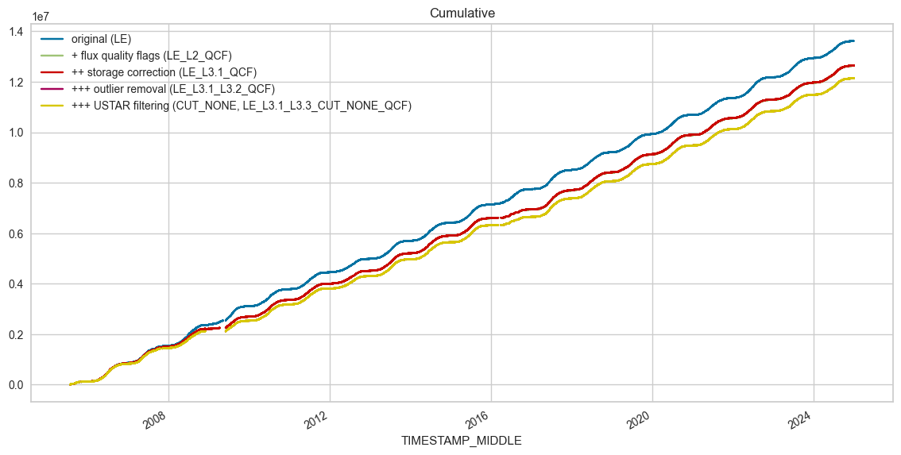
Available Level-3.3 fluxes#
_fluxcols = [x for x in fpc.fpc_df.columns if
'L3.1' and 'L3.3' in x and str(x).endswith('_QCF') and not str(x).startswith('FLAG_')]
_fluxcols
['LE_L3.1_L3.3_CUT_NONE_QCF']
_subset = fpc.fpc_df[_fluxcols].copy()
_subset.head()
| LE_L3.1_L3.3_CUT_NONE_QCF | |
|---|---|
| TIMESTAMP_MIDDLE | |
| 2005-01-01 00:15:00 | NaN |
| 2005-01-01 00:45:00 | NaN |
| 2005-01-01 01:15:00 | NaN |
| 2005-01-01 01:45:00 | NaN |
| 2005-01-01 02:15:00 | NaN |
_subset.plot(subplots=True, x_compat=True,
title="Available Level-3.3 fluxes after application of all quality checks", figsize=(12, 4.5));
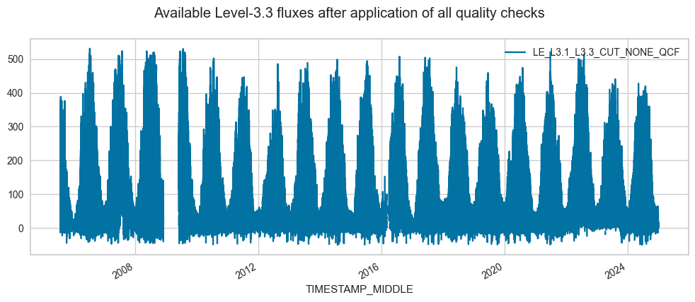
# # Draw boxplots
# for _f in _fluxcols:
# boxplots_df = fpc.fpc_df[[_f, "DAYTIME"]].copy()
# boxplots_df["MONTH"] = boxplots_df.index.month
# sns.set_theme(style="ticks", palette="pastel")
# plt.figure(figsize=(12, 3))
# sns.boxplot(x="MONTH", y=_f, palette=["r", "b"], hue="DAYTIME", data=boxplots_df).set_title(f"Boxplot of {_f}")
# sns.despine(offset=10, trim=True)
# plt.axhline(0, color="black");
# # Draw a nested violinplot and split the violins for easier comparison
# for _f in _fluxcols:
# plt.figure(figsize=(20, 2))
# sns.violinplot(data=boxplots_df, x="MONTH", y=fpc.fpc_df[_f], hue="DAYTIME", split=True, palette=["r", "b"], gap=.1,
# inner="quart")
# plt.axhline(0, color="black")
Save Level-3.3 results to file#
If needed, save results so far (input data and all created variables, e.g. flags and filtered fluxes) to a file
This can be useful if e.g. gap-filling should be done elsewhere (ReddyProc…)
# # results_df = fpc.get_data()
# out_df = fpc.fpc_df.copy()
# filename = "32.2_FluxProcessingChain_L3.3_NEE-results"
# out_df.to_csv(f"{filename}.csv", index=True)
# save_parquet(data=out_df, filename=filename)
Export for MDS gap-filling in REddyProc#
# from diive.core.times.times import insert_timestamp
# export = results_df.copy()
# exportcols = ['NEE_L3.1_L3.3_CUT_16_QCF', 'NEE_L3.1_L3.3_CUT_50_QCF', 'NEE_L3.1_L3.3_CUT_84_QCF',
# 'SW_IN_T1_2_1', 'TA_T1_2_1', 'VPD_T1_2_1']
# export = export[exportcols].copy()
# locs = (export.index.year >= 2005) & (export.index.year <= 2023)
# export = export[locs].copy()
# export = insert_timestamp(data=export, convention="end", set_as_index=True)
# export
# filename = "32.3_FluxProcessingChain_L3.3_NEE-subset-forREddyProc"
# export.to_csv(f"{filename}.csv", index=True)
# save_parquet(data=export, filename=filename)
Level-4.1: GAP-FILLING#
Introduced in
diivev0.85.0, gap-filling can now be done using both random forest and MDSFor gap-filling using MDS, make sure that variables are in the required units: short-wave incoming radiation in
W m-2, air temperature in°C, VPD inhPa
Parameters:
mds_settingsare parameters for the MDS gap-filling method, see docstring here for more detailsrf_settingsare parameters for scikit’sRandomForestRegressormodel, see their official documentation for allowed parametersml_feature_settingsare general settings for machine-learning models (such as random forest)
MGMT_VARS = ["TIMESINCE_MGMT_FERT_MIN_FOOTPRINT", "TIMESINCE_MGMT_FERT_ORG_FOOTPRINT",
"TIMESINCE_MGMT_GRAZING_FOOTPRINT", "TIMESINCE_MGMT_MOWING_FOOTPRINT",
"TIMESINCE_MGMT_SOILCULTIVATION_FOOTPRINT", "TIMESINCE_MGMT_SOWING_FOOTPRINT",
"TIMESINCE_MGMT_PESTICIDE_HERBICIDE_FOOTPRINT"]
FEATURES = ["SW_IN_T1_2_1", "TA_T1_2_1", "VPD_T1_2_1"] + MGMT_VARS
fpc.level41_gapfilling_longterm(
run_mds=False,
run_random_forest=True,
verbose=True,
ml_feature_settings={
'features': FEATURES,
'features_lag': [-1, -1],
'features_lag_exclude_cols': MGMT_VARS, # Management variables are not lagged
'reduce_features': False,
'include_timestamp_as_features': True,
'add_continuous_record_number': False,
'perm_n_repeats': 5,
},
rf_settings={
'n_estimators': 500,
'random_state': 42,
'min_samples_split': 2,
'min_samples_leaf': 1,
'n_jobs': -1
},
# mds_settings={
# 'swin': "SW_IN_T1_2_1",
# 'ta': "TA_T1_2_1",
# 'vpd': "VPD_T1_2_1",
# 'swin_class': 50,
# 'ta_class': 2.5,
# 'vpd_class': 0.5,
# 'min_n_vals_nt': 0
# }
)
============================================================
Starting gap-filling for
LE_L3.1_L3.3_CUT_NONE_QCF
using <class 'sklearn.ensemble._forest.RandomForestRegressor'>
============================================================
Adding new data columns ...
++ Added new columns with lagged variants for: ['SW_IN_T1_2_1', 'TA_T1_2_1', 'VPD_T1_2_1'] (lags between -1 and -1 with stepsize 1), no lagged variants for: ['TIMESINCE_MGMT_FERT_MIN_FOOTPRINT', 'TIMESINCE_MGMT_FERT_ORG_FOOTPRINT', 'TIMESINCE_MGMT_GRAZING_FOOTPRINT', 'TIMESINCE_MGMT_MOWING_FOOTPRINT', 'TIMESINCE_MGMT_SOILCULTIVATION_FOOTPRINT', 'TIMESINCE_MGMT_SOWING_FOOTPRINT', 'TIMESINCE_MGMT_PESTICIDE_HERBICIDE_FOOTPRINT', 'LE_L3.1_L3.3_CUT_NONE_QCF']. Shifting the time series created gaps which were then filled with the nearest value.
++ Added new columns with timestamp info: ['.YEAR', '.SEASON', '.MONTH', '.WEEK', '.DOY', '.HOUR', '.YEARMONTH', '.YEARDOY', '.YEARWEEK']
Sanitizing timestamp ...
>>> Validating timestamp naming of timestamp column TIMESTAMP_MIDDLE ... Timestamp name OK.
>>> Converting timestamp TIMESTAMP_MIDDLE to datetime ... OK
>>> All rows have timestamp TIMESTAMP_MIDDLE, no rows removed.
>>> Sorting timestamp TIMESTAMP_MIDDLE ascending ...
>>> Removing data records with duplicate indexes ... OK (no duplicates found in timestamp index)
>>> Creating continuous <30 * Minutes> timestamp index for timestamp TIMESTAMP_MIDDLE between 2005-01-01 00:15:00 and 2024-12-31 23:45:00 ...
[neighboring_years] Assigned [2005, 2006, 2007] to data pool for 2005.
[neighboring_years] Assigned [2005, 2006, 2007] to data pool for 2006.
[neighboring_years] Assigned [2006, 2007, 2008] to data pool for 2007.
[neighboring_years] Assigned [2007, 2008, 2009] to data pool for 2008.
[neighboring_years] Assigned [2008, 2009, 2010] to data pool for 2009.
[neighboring_years] Assigned [2009, 2010, 2011] to data pool for 2010.
[neighboring_years] Assigned [2010, 2011, 2012] to data pool for 2011.
[neighboring_years] Assigned [2011, 2012, 2013] to data pool for 2012.
[neighboring_years] Assigned [2012, 2013, 2014] to data pool for 2013.
[neighboring_years] Assigned [2013, 2014, 2015] to data pool for 2014.
[neighboring_years] Assigned [2014, 2015, 2016] to data pool for 2015.
[neighboring_years] Assigned [2015, 2016, 2017] to data pool for 2016.
[neighboring_years] Assigned [2016, 2017, 2018] to data pool for 2017.
[neighboring_years] Assigned [2017, 2018, 2019] to data pool for 2018.
[neighboring_years] Assigned [2018, 2019, 2020] to data pool for 2019.
[neighboring_years] Assigned [2019, 2020, 2021] to data pool for 2020.
[neighboring_years] Assigned [2020, 2021, 2022] to data pool for 2021.
[neighboring_years] Assigned [2021, 2022, 2023] to data pool for 2022.
[neighboring_years] Assigned [2022, 2023, 2024] to data pool for 2023.
[neighboring_years] Assigned [2022, 2023, 2024] to data pool for 2024.
Initializing model for 2005 ...
============================================================
Starting gap-filling for
LE_L3.1_L3.3_CUT_NONE_QCF
using <class 'sklearn.ensemble._forest.RandomForestRegressor'>
============================================================
Initializing model for 2006 ...
============================================================
Starting gap-filling for
LE_L3.1_L3.3_CUT_NONE_QCF
using <class 'sklearn.ensemble._forest.RandomForestRegressor'>
============================================================
Initializing model for 2007 ...
============================================================
Starting gap-filling for
LE_L3.1_L3.3_CUT_NONE_QCF
using <class 'sklearn.ensemble._forest.RandomForestRegressor'>
============================================================
Initializing model for 2008 ...
============================================================
Starting gap-filling for
LE_L3.1_L3.3_CUT_NONE_QCF
using <class 'sklearn.ensemble._forest.RandomForestRegressor'>
============================================================
Initializing model for 2009 ...
============================================================
Starting gap-filling for
LE_L3.1_L3.3_CUT_NONE_QCF
using <class 'sklearn.ensemble._forest.RandomForestRegressor'>
============================================================
Initializing model for 2010 ...
============================================================
Starting gap-filling for
LE_L3.1_L3.3_CUT_NONE_QCF
using <class 'sklearn.ensemble._forest.RandomForestRegressor'>
============================================================
Initializing model for 2011 ...
============================================================
Starting gap-filling for
LE_L3.1_L3.3_CUT_NONE_QCF
using <class 'sklearn.ensemble._forest.RandomForestRegressor'>
============================================================
Initializing model for 2012 ...
============================================================
Starting gap-filling for
LE_L3.1_L3.3_CUT_NONE_QCF
using <class 'sklearn.ensemble._forest.RandomForestRegressor'>
============================================================
Initializing model for 2013 ...
============================================================
Starting gap-filling for
LE_L3.1_L3.3_CUT_NONE_QCF
using <class 'sklearn.ensemble._forest.RandomForestRegressor'>
============================================================
Initializing model for 2014 ...
============================================================
Starting gap-filling for
LE_L3.1_L3.3_CUT_NONE_QCF
using <class 'sklearn.ensemble._forest.RandomForestRegressor'>
============================================================
Initializing model for 2015 ...
============================================================
Starting gap-filling for
LE_L3.1_L3.3_CUT_NONE_QCF
using <class 'sklearn.ensemble._forest.RandomForestRegressor'>
============================================================
Initializing model for 2016 ...
============================================================
Starting gap-filling for
LE_L3.1_L3.3_CUT_NONE_QCF
using <class 'sklearn.ensemble._forest.RandomForestRegressor'>
============================================================
Initializing model for 2017 ...
============================================================
Starting gap-filling for
LE_L3.1_L3.3_CUT_NONE_QCF
using <class 'sklearn.ensemble._forest.RandomForestRegressor'>
============================================================
Initializing model for 2018 ...
============================================================
Starting gap-filling for
LE_L3.1_L3.3_CUT_NONE_QCF
using <class 'sklearn.ensemble._forest.RandomForestRegressor'>
============================================================
Initializing model for 2019 ...
============================================================
Starting gap-filling for
LE_L3.1_L3.3_CUT_NONE_QCF
using <class 'sklearn.ensemble._forest.RandomForestRegressor'>
============================================================
Initializing model for 2020 ...
============================================================
Starting gap-filling for
LE_L3.1_L3.3_CUT_NONE_QCF
using <class 'sklearn.ensemble._forest.RandomForestRegressor'>
============================================================
Initializing model for 2021 ...
============================================================
Starting gap-filling for
LE_L3.1_L3.3_CUT_NONE_QCF
using <class 'sklearn.ensemble._forest.RandomForestRegressor'>
============================================================
Initializing model for 2022 ...
============================================================
Starting gap-filling for
LE_L3.1_L3.3_CUT_NONE_QCF
using <class 'sklearn.ensemble._forest.RandomForestRegressor'>
============================================================
Initializing model for 2023 ...
============================================================
Starting gap-filling for
LE_L3.1_L3.3_CUT_NONE_QCF
using <class 'sklearn.ensemble._forest.RandomForestRegressor'>
============================================================
Initializing model for 2024 ...
============================================================
Starting gap-filling for
LE_L3.1_L3.3_CUT_NONE_QCF
using <class 'sklearn.ensemble._forest.RandomForestRegressor'>
============================================================
Training model for 2005 ...
Training final model ...
>>> Training model <class 'sklearn.ensemble._forest.RandomForestRegressor'> based on data between 2005-07-27 11:45:00 and 2007-12-31 16:15:00 ...
>>> Fitting model to training data ...
>>> Using model to predict target LE_L3.1_L3.3_CUT_NONE_QCF in unseen test data ...
>>> Using model to calculate permutation importance based on unseen test data ...
>>> Calculating prediction scores based on predicting unseen test data of LE_L3.1_L3.3_CUT_NONE_QCF ...
>>> Collecting results, details about training and testing can be accessed by calling .report_traintest().
>>> Done.
Gap-filling 2005 ...
Gap-filling using final model ...
>>> Using final model on all data to predict target LE_L3.1_L3.3_CUT_NONE_QCF ...
>>> Using final model on all data to calculate permutation importance ...
>>> Calculating prediction scores based on all data predicting LE_L3.1_L3.3_CUT_NONE_QCF ...
predicted 52560 records._L3.1_L3.3_CUT_NONE_QCF where all features are available ...
>>> Collecting results for final model ...
>>> Filling 32555 missing records in target with predictions from final model ...
>>> Storing gap-filled time series in variable LE_L3.1_L3.3_CUT_NONE_QCF_gfRF ...
>>> Restoring original timestamp in results ...
Gap-filling 0 remaining missing records in LE_L3.1_L3.3_CUT_NONE_QCF_gfRF using fallback model ...
>>> Fallback model not necessary, all gaps were already filled.
>>> Combining predictions from full model and fallback model ...
Training model for 2006 ...
Training final model ...
>>> Training model <class 'sklearn.ensemble._forest.RandomForestRegressor'> based on data between 2005-07-27 11:45:00 and 2007-12-31 16:15:00 ...
>>> Fitting model to training data ...
>>> Using model to predict target LE_L3.1_L3.3_CUT_NONE_QCF in unseen test data ...
>>> Using model to calculate permutation importance based on unseen test data ...
>>> Calculating prediction scores based on predicting unseen test data of LE_L3.1_L3.3_CUT_NONE_QCF ...
>>> Collecting results, details about training and testing can be accessed by calling .report_traintest().
>>> Done.
Gap-filling 2006 ...
Gap-filling using final model ...
>>> Using final model on all data to predict target LE_L3.1_L3.3_CUT_NONE_QCF ...
>>> Using final model on all data to calculate permutation importance ...
>>> Calculating prediction scores based on all data predicting LE_L3.1_L3.3_CUT_NONE_QCF ...
predicted 52560 records._L3.1_L3.3_CUT_NONE_QCF where all features are available ...
>>> Collecting results for final model ...
>>> Filling 32555 missing records in target with predictions from final model ...
>>> Storing gap-filled time series in variable LE_L3.1_L3.3_CUT_NONE_QCF_gfRF ...
>>> Restoring original timestamp in results ...
Gap-filling 0 remaining missing records in LE_L3.1_L3.3_CUT_NONE_QCF_gfRF using fallback model ...
>>> Fallback model not necessary, all gaps were already filled.
>>> Combining predictions from full model and fallback model ...
Training model for 2007 ...
Training final model ...
>>> Training model <class 'sklearn.ensemble._forest.RandomForestRegressor'> based on data between 2006-01-01 10:45:00 and 2008-11-30 16:15:00 ...
>>> Fitting model to training data ...
>>> Using model to predict target LE_L3.1_L3.3_CUT_NONE_QCF in unseen test data ...
>>> Using model to calculate permutation importance based on unseen test data ...
>>> Calculating prediction scores based on predicting unseen test data of LE_L3.1_L3.3_CUT_NONE_QCF ...
>>> Collecting results, details about training and testing can be accessed by calling .report_traintest().
>>> Done.
Gap-filling 2007 ...
Gap-filling using final model ...
>>> Using final model on all data to predict target LE_L3.1_L3.3_CUT_NONE_QCF ...
>>> Using final model on all data to calculate permutation importance ...
>>> Calculating prediction scores based on all data predicting LE_L3.1_L3.3_CUT_NONE_QCF ...
predicted 52608 records._L3.1_L3.3_CUT_NONE_QCF where all features are available ...
>>> Collecting results for final model ...
>>> Filling 27705 missing records in target with predictions from final model ...
>>> Storing gap-filled time series in variable LE_L3.1_L3.3_CUT_NONE_QCF_gfRF ...
>>> Restoring original timestamp in results ...
Gap-filling 0 remaining missing records in LE_L3.1_L3.3_CUT_NONE_QCF_gfRF using fallback model ...
>>> Fallback model not necessary, all gaps were already filled.
>>> Combining predictions from full model and fallback model ...
Training model for 2008 ...
Training final model ...
>>> Training model <class 'sklearn.ensemble._forest.RandomForestRegressor'> based on data between 2007-01-01 01:15:00 and 2009-12-31 17:15:00 ...
>>> Fitting model to training data ...
>>> Using model to predict target LE_L3.1_L3.3_CUT_NONE_QCF in unseen test data ...
>>> Using model to calculate permutation importance based on unseen test data ...
>>> Calculating prediction scores based on predicting unseen test data of LE_L3.1_L3.3_CUT_NONE_QCF ...
>>> Collecting results, details about training and testing can be accessed by calling .report_traintest().
>>> Done.
Gap-filling 2008 ...
Gap-filling using final model ...
>>> Using final model on all data to predict target LE_L3.1_L3.3_CUT_NONE_QCF ...
>>> Using final model on all data to calculate permutation importance ...
>>> Calculating prediction scores based on all data predicting LE_L3.1_L3.3_CUT_NONE_QCF ...
predicted 52608 records._L3.1_L3.3_CUT_NONE_QCF where all features are available ...
>>> Collecting results for final model ...
>>> Filling 32936 missing records in target with predictions from final model ...
>>> Storing gap-filled time series in variable LE_L3.1_L3.3_CUT_NONE_QCF_gfRF ...
>>> Restoring original timestamp in results ...
Gap-filling 0 remaining missing records in LE_L3.1_L3.3_CUT_NONE_QCF_gfRF using fallback model ...
>>> Fallback model not necessary, all gaps were already filled.
>>> Combining predictions from full model and fallback model ...
Training model for 2009 ...
Training final model ...
>>> Training model <class 'sklearn.ensemble._forest.RandomForestRegressor'> based on data between 2008-01-01 15:15:00 and 2010-12-31 23:45:00 ...
>>> Fitting model to training data ...
>>> Using model to predict target LE_L3.1_L3.3_CUT_NONE_QCF in unseen test data ...
>>> Using model to calculate permutation importance based on unseen test data ...
>>> Calculating prediction scores based on predicting unseen test data of LE_L3.1_L3.3_CUT_NONE_QCF ...
>>> Collecting results, details about training and testing can be accessed by calling .report_traintest().
>>> Done.
Gap-filling 2009 ...
Gap-filling using final model ...
>>> Using final model on all data to predict target LE_L3.1_L3.3_CUT_NONE_QCF ...
>>> Using final model on all data to calculate permutation importance ...
>>> Calculating prediction scores based on all data predicting LE_L3.1_L3.3_CUT_NONE_QCF ...
predicted 52608 records._L3.1_L3.3_CUT_NONE_QCF where all features are available ...
>>> Collecting results for final model ...
>>> Filling 31029 missing records in target with predictions from final model ...
>>> Storing gap-filled time series in variable LE_L3.1_L3.3_CUT_NONE_QCF_gfRF ...
>>> Restoring original timestamp in results ...
Gap-filling 0 remaining missing records in LE_L3.1_L3.3_CUT_NONE_QCF_gfRF using fallback model ...
>>> Fallback model not necessary, all gaps were already filled.
>>> Combining predictions from full model and fallback model ...
Training model for 2010 ...
Training final model ...
>>> Training model <class 'sklearn.ensemble._forest.RandomForestRegressor'> based on data between 2009-06-03 16:45:00 and 2011-12-31 02:15:00 ...
>>> Fitting model to training data ...
>>> Using model to predict target LE_L3.1_L3.3_CUT_NONE_QCF in unseen test data ...
>>> Using model to calculate permutation importance based on unseen test data ...
>>> Calculating prediction scores based on predicting unseen test data of LE_L3.1_L3.3_CUT_NONE_QCF ...
>>> Collecting results, details about training and testing can be accessed by calling .report_traintest().
>>> Done.
Gap-filling 2010 ...
Gap-filling using final model ...
>>> Using final model on all data to predict target LE_L3.1_L3.3_CUT_NONE_QCF ...
>>> Using final model on all data to calculate permutation importance ...
>>> Calculating prediction scores based on all data predicting LE_L3.1_L3.3_CUT_NONE_QCF ...
predicted 52560 records._L3.1_L3.3_CUT_NONE_QCF where all features are available ...
>>> Collecting results for final model ...
>>> Filling 29378 missing records in target with predictions from final model ...
>>> Storing gap-filled time series in variable LE_L3.1_L3.3_CUT_NONE_QCF_gfRF ...
>>> Restoring original timestamp in results ...
Gap-filling 0 remaining missing records in LE_L3.1_L3.3_CUT_NONE_QCF_gfRF using fallback model ...
>>> Fallback model not necessary, all gaps were already filled.
>>> Combining predictions from full model and fallback model ...
Training model for 2011 ...
Training final model ...
>>> Training model <class 'sklearn.ensemble._forest.RandomForestRegressor'> based on data between 2010-01-01 03:45:00 and 2012-12-31 18:45:00 ...
>>> Fitting model to training data ...
>>> Using model to predict target LE_L3.1_L3.3_CUT_NONE_QCF in unseen test data ...
>>> Using model to calculate permutation importance based on unseen test data ...
>>> Calculating prediction scores based on predicting unseen test data of LE_L3.1_L3.3_CUT_NONE_QCF ...
>>> Collecting results, details about training and testing can be accessed by calling .report_traintest().
>>> Done.
Gap-filling 2011 ...
Gap-filling using final model ...
>>> Using final model on all data to predict target LE_L3.1_L3.3_CUT_NONE_QCF ...
>>> Using final model on all data to calculate permutation importance ...
>>> Calculating prediction scores based on all data predicting LE_L3.1_L3.3_CUT_NONE_QCF ...
predicted 52608 records._L3.1_L3.3_CUT_NONE_QCF where all features are available ...
>>> Collecting results for final model ...
>>> Filling 25271 missing records in target with predictions from final model ...
>>> Storing gap-filled time series in variable LE_L3.1_L3.3_CUT_NONE_QCF_gfRF ...
>>> Restoring original timestamp in results ...
Gap-filling 0 remaining missing records in LE_L3.1_L3.3_CUT_NONE_QCF_gfRF using fallback model ...
>>> Fallback model not necessary, all gaps were already filled.
>>> Combining predictions from full model and fallback model ...
Training model for 2012 ...
Training final model ...
>>> Training model <class 'sklearn.ensemble._forest.RandomForestRegressor'> based on data between 2011-01-01 00:45:00 and 2013-12-31 15:15:00 ...
>>> Fitting model to training data ...
>>> Using model to predict target LE_L3.1_L3.3_CUT_NONE_QCF in unseen test data ...
>>> Using model to calculate permutation importance based on unseen test data ...
>>> Calculating prediction scores based on predicting unseen test data of LE_L3.1_L3.3_CUT_NONE_QCF ...
>>> Collecting results, details about training and testing can be accessed by calling .report_traintest().
>>> Done.
Gap-filling 2012 ...
Gap-filling using final model ...
>>> Using final model on all data to predict target LE_L3.1_L3.3_CUT_NONE_QCF ...
>>> Using final model on all data to calculate permutation importance ...
>>> Calculating prediction scores based on all data predicting LE_L3.1_L3.3_CUT_NONE_QCF ...
predicted 52608 records._L3.1_L3.3_CUT_NONE_QCF where all features are available ...
>>> Collecting results for final model ...
>>> Filling 24969 missing records in target with predictions from final model ...
>>> Storing gap-filled time series in variable LE_L3.1_L3.3_CUT_NONE_QCF_gfRF ...
>>> Restoring original timestamp in results ...
Gap-filling 0 remaining missing records in LE_L3.1_L3.3_CUT_NONE_QCF_gfRF using fallback model ...
>>> Fallback model not necessary, all gaps were already filled.
>>> Combining predictions from full model and fallback model ...
Training model for 2013 ...
Training final model ...
>>> Training model <class 'sklearn.ensemble._forest.RandomForestRegressor'> based on data between 2012-01-01 01:45:00 and 2014-12-31 15:45:00 ...
>>> Fitting model to training data ...
>>> Using model to predict target LE_L3.1_L3.3_CUT_NONE_QCF in unseen test data ...
>>> Using model to calculate permutation importance based on unseen test data ...
>>> Calculating prediction scores based on predicting unseen test data of LE_L3.1_L3.3_CUT_NONE_QCF ...
>>> Collecting results, details about training and testing can be accessed by calling .report_traintest().
>>> Done.
Gap-filling 2013 ...
Gap-filling using final model ...
>>> Using final model on all data to predict target LE_L3.1_L3.3_CUT_NONE_QCF ...
>>> Using final model on all data to calculate permutation importance ...
>>> Calculating prediction scores based on all data predicting LE_L3.1_L3.3_CUT_NONE_QCF ...
predicted 52608 records._L3.1_L3.3_CUT_NONE_QCF where all features are available ...
>>> Collecting results for final model ...
>>> Filling 24588 missing records in target with predictions from final model ...
>>> Storing gap-filled time series in variable LE_L3.1_L3.3_CUT_NONE_QCF_gfRF ...
>>> Restoring original timestamp in results ...
Gap-filling 0 remaining missing records in LE_L3.1_L3.3_CUT_NONE_QCF_gfRF using fallback model ...
>>> Fallback model not necessary, all gaps were already filled.
>>> Combining predictions from full model and fallback model ...
Training model for 2014 ...
Training final model ...
>>> Training model <class 'sklearn.ensemble._forest.RandomForestRegressor'> based on data between 2013-01-01 12:15:00 and 2015-12-31 21:15:00 ...
>>> Fitting model to training data ...
>>> Using model to predict target LE_L3.1_L3.3_CUT_NONE_QCF in unseen test data ...
>>> Using model to calculate permutation importance based on unseen test data ...
>>> Calculating prediction scores based on predicting unseen test data of LE_L3.1_L3.3_CUT_NONE_QCF ...
>>> Collecting results, details about training and testing can be accessed by calling .report_traintest().
>>> Done.
Gap-filling 2014 ...
Gap-filling using final model ...
>>> Using final model on all data to predict target LE_L3.1_L3.3_CUT_NONE_QCF ...
>>> Using final model on all data to calculate permutation importance ...
>>> Calculating prediction scores based on all data predicting LE_L3.1_L3.3_CUT_NONE_QCF ...
predicted 52560 records._L3.1_L3.3_CUT_NONE_QCF where all features are available ...
>>> Collecting results for final model ...
>>> Filling 24176 missing records in target with predictions from final model ...
>>> Storing gap-filled time series in variable LE_L3.1_L3.3_CUT_NONE_QCF_gfRF ...
>>> Restoring original timestamp in results ...
Gap-filling 0 remaining missing records in LE_L3.1_L3.3_CUT_NONE_QCF_gfRF using fallback model ...
>>> Fallback model not necessary, all gaps were already filled.
>>> Combining predictions from full model and fallback model ...
Training model for 2015 ...
Training final model ...
>>> Training model <class 'sklearn.ensemble._forest.RandomForestRegressor'> based on data between 2014-01-01 09:45:00 and 2016-12-31 23:45:00 ...
>>> Fitting model to training data ...
>>> Using model to predict target LE_L3.1_L3.3_CUT_NONE_QCF in unseen test data ...
>>> Using model to calculate permutation importance based on unseen test data ...
>>> Calculating prediction scores based on predicting unseen test data of LE_L3.1_L3.3_CUT_NONE_QCF ...
>>> Collecting results, details about training and testing can be accessed by calling .report_traintest().
>>> Done.
Gap-filling 2015 ...
Gap-filling using final model ...
>>> Using final model on all data to predict target LE_L3.1_L3.3_CUT_NONE_QCF ...
>>> Using final model on all data to calculate permutation importance ...
>>> Calculating prediction scores based on all data predicting LE_L3.1_L3.3_CUT_NONE_QCF ...
predicted 52608 records._L3.1_L3.3_CUT_NONE_QCF where all features are available ...
>>> Collecting results for final model ...
>>> Filling 29253 missing records in target with predictions from final model ...
>>> Storing gap-filled time series in variable LE_L3.1_L3.3_CUT_NONE_QCF_gfRF ...
>>> Restoring original timestamp in results ...
Gap-filling 0 remaining missing records in LE_L3.1_L3.3_CUT_NONE_QCF_gfRF using fallback model ...
>>> Fallback model not necessary, all gaps were already filled.
>>> Combining predictions from full model and fallback model ...
Training model for 2016 ...
Training final model ...
>>> Training model <class 'sklearn.ensemble._forest.RandomForestRegressor'> based on data between 2015-01-01 13:45:00 and 2017-12-31 17:15:00 ...
>>> Fitting model to training data ...
>>> Using model to predict target LE_L3.1_L3.3_CUT_NONE_QCF in unseen test data ...
>>> Using model to calculate permutation importance based on unseen test data ...
>>> Calculating prediction scores based on predicting unseen test data of LE_L3.1_L3.3_CUT_NONE_QCF ...
>>> Collecting results, details about training and testing can be accessed by calling .report_traintest().
>>> Done.
Gap-filling 2016 ...
Gap-filling using final model ...
>>> Using final model on all data to predict target LE_L3.1_L3.3_CUT_NONE_QCF ...
>>> Using final model on all data to calculate permutation importance ...
>>> Calculating prediction scores based on all data predicting LE_L3.1_L3.3_CUT_NONE_QCF ...
predicted 52608 records._L3.1_L3.3_CUT_NONE_QCF where all features are available ...
>>> Collecting results for final model ...
>>> Filling 28926 missing records in target with predictions from final model ...
>>> Storing gap-filled time series in variable LE_L3.1_L3.3_CUT_NONE_QCF_gfRF ...
>>> Restoring original timestamp in results ...
Gap-filling 0 remaining missing records in LE_L3.1_L3.3_CUT_NONE_QCF_gfRF using fallback model ...
>>> Fallback model not necessary, all gaps were already filled.
>>> Combining predictions from full model and fallback model ...
Training model for 2017 ...
Training final model ...
>>> Training model <class 'sklearn.ensemble._forest.RandomForestRegressor'> based on data between 2016-01-01 02:15:00 and 2018-12-31 23:45:00 ...
>>> Fitting model to training data ...
>>> Using model to predict target LE_L3.1_L3.3_CUT_NONE_QCF in unseen test data ...
>>> Using model to calculate permutation importance based on unseen test data ...
>>> Calculating prediction scores based on predicting unseen test data of LE_L3.1_L3.3_CUT_NONE_QCF ...
>>> Collecting results, details about training and testing can be accessed by calling .report_traintest().
>>> Done.
Gap-filling 2017 ...
Gap-filling using final model ...
>>> Using final model on all data to predict target LE_L3.1_L3.3_CUT_NONE_QCF ...
>>> Using final model on all data to calculate permutation importance ...
>>> Calculating prediction scores based on all data predicting LE_L3.1_L3.3_CUT_NONE_QCF ...
predicted 52608 records._L3.1_L3.3_CUT_NONE_QCF where all features are available ...
>>> Collecting results for final model ...
>>> Filling 27392 missing records in target with predictions from final model ...
>>> Storing gap-filled time series in variable LE_L3.1_L3.3_CUT_NONE_QCF_gfRF ...
>>> Restoring original timestamp in results ...
Gap-filling 0 remaining missing records in LE_L3.1_L3.3_CUT_NONE_QCF_gfRF using fallback model ...
>>> Fallback model not necessary, all gaps were already filled.
>>> Combining predictions from full model and fallback model ...
Training model for 2018 ...
Training final model ...
>>> Training model <class 'sklearn.ensemble._forest.RandomForestRegressor'> based on data between 2017-01-01 01:45:00 and 2019-12-31 23:15:00 ...
>>> Fitting model to training data ...
>>> Using model to predict target LE_L3.1_L3.3_CUT_NONE_QCF in unseen test data ...
>>> Using model to calculate permutation importance based on unseen test data ...
>>> Calculating prediction scores based on predicting unseen test data of LE_L3.1_L3.3_CUT_NONE_QCF ...
>>> Collecting results, details about training and testing can be accessed by calling .report_traintest().
>>> Done.
Gap-filling 2018 ...
Gap-filling using final model ...
>>> Using final model on all data to predict target LE_L3.1_L3.3_CUT_NONE_QCF ...
>>> Using final model on all data to calculate permutation importance ...
>>> Calculating prediction scores based on all data predicting LE_L3.1_L3.3_CUT_NONE_QCF ...
predicted 52560 records._L3.1_L3.3_CUT_NONE_QCF where all features are available ...
>>> Collecting results for final model ...
>>> Filling 21781 missing records in target with predictions from final model ...
>>> Storing gap-filled time series in variable LE_L3.1_L3.3_CUT_NONE_QCF_gfRF ...
>>> Restoring original timestamp in results ...
Gap-filling 0 remaining missing records in LE_L3.1_L3.3_CUT_NONE_QCF_gfRF using fallback model ...
>>> Fallback model not necessary, all gaps were already filled.
>>> Combining predictions from full model and fallback model ...
Training model for 2019 ...
Training final model ...
>>> Training model <class 'sklearn.ensemble._forest.RandomForestRegressor'> based on data between 2018-01-01 06:45:00 and 2020-12-31 20:15:00 ...
>>> Fitting model to training data ...
>>> Using model to predict target LE_L3.1_L3.3_CUT_NONE_QCF in unseen test data ...
>>> Using model to calculate permutation importance based on unseen test data ...
>>> Calculating prediction scores based on predicting unseen test data of LE_L3.1_L3.3_CUT_NONE_QCF ...
>>> Collecting results, details about training and testing can be accessed by calling .report_traintest().
>>> Done.
Gap-filling 2019 ...
Gap-filling using final model ...
>>> Using final model on all data to predict target LE_L3.1_L3.3_CUT_NONE_QCF ...
>>> Using final model on all data to calculate permutation importance ...
>>> Calculating prediction scores based on all data predicting LE_L3.1_L3.3_CUT_NONE_QCF ...
predicted 52608 records._L3.1_L3.3_CUT_NONE_QCF where all features are available ...
>>> Collecting results for final model ...
>>> Filling 20978 missing records in target with predictions from final model ...
>>> Storing gap-filled time series in variable LE_L3.1_L3.3_CUT_NONE_QCF_gfRF ...
>>> Restoring original timestamp in results ...
Gap-filling 0 remaining missing records in LE_L3.1_L3.3_CUT_NONE_QCF_gfRF using fallback model ...
>>> Fallback model not necessary, all gaps were already filled.
>>> Combining predictions from full model and fallback model ...
Training model for 2020 ...
Training final model ...
>>> Training model <class 'sklearn.ensemble._forest.RandomForestRegressor'> based on data between 2019-01-01 00:15:00 and 2021-12-31 16:45:00 ...
>>> Fitting model to training data ...
>>> Using model to predict target LE_L3.1_L3.3_CUT_NONE_QCF in unseen test data ...
>>> Using model to calculate permutation importance based on unseen test data ...
>>> Calculating prediction scores based on predicting unseen test data of LE_L3.1_L3.3_CUT_NONE_QCF ...
>>> Collecting results, details about training and testing can be accessed by calling .report_traintest().
>>> Done.
Gap-filling 2020 ...
Gap-filling using final model ...
>>> Using final model on all data to predict target LE_L3.1_L3.3_CUT_NONE_QCF ...
>>> Using final model on all data to calculate permutation importance ...
>>> Calculating prediction scores based on all data predicting LE_L3.1_L3.3_CUT_NONE_QCF ...
predicted 52608 records._L3.1_L3.3_CUT_NONE_QCF where all features are available ...
>>> Collecting results for final model ...
>>> Filling 22010 missing records in target with predictions from final model ...
>>> Storing gap-filled time series in variable LE_L3.1_L3.3_CUT_NONE_QCF_gfRF ...
>>> Restoring original timestamp in results ...
Gap-filling 0 remaining missing records in LE_L3.1_L3.3_CUT_NONE_QCF_gfRF using fallback model ...
>>> Fallback model not necessary, all gaps were already filled.
>>> Combining predictions from full model and fallback model ...
Training model for 2021 ...
Training final model ...
>>> Training model <class 'sklearn.ensemble._forest.RandomForestRegressor'> based on data between 2020-01-01 00:15:00 and 2022-12-31 12:45:00 ...
>>> Fitting model to training data ...
>>> Using model to predict target LE_L3.1_L3.3_CUT_NONE_QCF in unseen test data ...
>>> Using model to calculate permutation importance based on unseen test data ...
>>> Calculating prediction scores based on predicting unseen test data of LE_L3.1_L3.3_CUT_NONE_QCF ...
>>> Collecting results, details about training and testing can be accessed by calling .report_traintest().
>>> Done.
Gap-filling 2021 ...
Gap-filling using final model ...
>>> Using final model on all data to predict target LE_L3.1_L3.3_CUT_NONE_QCF ...
>>> Using final model on all data to calculate permutation importance ...
>>> Calculating prediction scores based on all data predicting LE_L3.1_L3.3_CUT_NONE_QCF ...
predicted 52608 records._L3.1_L3.3_CUT_NONE_QCF where all features are available ...
>>> Collecting results for final model ...
>>> Filling 24556 missing records in target with predictions from final model ...
>>> Storing gap-filled time series in variable LE_L3.1_L3.3_CUT_NONE_QCF_gfRF ...
>>> Restoring original timestamp in results ...
Gap-filling 0 remaining missing records in LE_L3.1_L3.3_CUT_NONE_QCF_gfRF using fallback model ...
>>> Fallback model not necessary, all gaps were already filled.
>>> Combining predictions from full model and fallback model ...
Training model for 2022 ...
Training final model ...
>>> Training model <class 'sklearn.ensemble._forest.RandomForestRegressor'> based on data between 2021-01-01 02:45:00 and 2023-12-31 23:45:00 ...
>>> Fitting model to training data ...
>>> Using model to predict target LE_L3.1_L3.3_CUT_NONE_QCF in unseen test data ...
>>> Using model to calculate permutation importance based on unseen test data ...
>>> Calculating prediction scores based on predicting unseen test data of LE_L3.1_L3.3_CUT_NONE_QCF ...
>>> Collecting results, details about training and testing can be accessed by calling .report_traintest().
>>> Done.
Gap-filling 2022 ...
Gap-filling using final model ...
>>> Using final model on all data to predict target LE_L3.1_L3.3_CUT_NONE_QCF ...
>>> Using final model on all data to calculate permutation importance ...
>>> Calculating prediction scores based on all data predicting LE_L3.1_L3.3_CUT_NONE_QCF ...
predicted 52560 records._L3.1_L3.3_CUT_NONE_QCF where all features are available ...
>>> Collecting results for final model ...
>>> Filling 27611 missing records in target with predictions from final model ...
>>> Storing gap-filled time series in variable LE_L3.1_L3.3_CUT_NONE_QCF_gfRF ...
>>> Restoring original timestamp in results ...
Gap-filling 0 remaining missing records in LE_L3.1_L3.3_CUT_NONE_QCF_gfRF using fallback model ...
>>> Fallback model not necessary, all gaps were already filled.
>>> Combining predictions from full model and fallback model ...
Training model for 2023 ...
Training final model ...
>>> Training model <class 'sklearn.ensemble._forest.RandomForestRegressor'> based on data between 2022-01-01 11:15:00 and 2024-12-31 23:45:00 ...
>>> Fitting model to training data ...
>>> Using model to predict target LE_L3.1_L3.3_CUT_NONE_QCF in unseen test data ...
>>> Using model to calculate permutation importance based on unseen test data ...
>>> Calculating prediction scores based on predicting unseen test data of LE_L3.1_L3.3_CUT_NONE_QCF ...
>>> Collecting results, details about training and testing can be accessed by calling .report_traintest().
>>> Done.
Gap-filling 2023 ...
Gap-filling using final model ...
>>> Using final model on all data to predict target LE_L3.1_L3.3_CUT_NONE_QCF ...
>>> Using final model on all data to calculate permutation importance ...
>>> Calculating prediction scores based on all data predicting LE_L3.1_L3.3_CUT_NONE_QCF ...
predicted 52608 records._L3.1_L3.3_CUT_NONE_QCF where all features are available ...
>>> Collecting results for final model ...
>>> Filling 27170 missing records in target with predictions from final model ...
>>> Storing gap-filled time series in variable LE_L3.1_L3.3_CUT_NONE_QCF_gfRF ...
>>> Restoring original timestamp in results ...
Gap-filling 0 remaining missing records in LE_L3.1_L3.3_CUT_NONE_QCF_gfRF using fallback model ...
>>> Fallback model not necessary, all gaps were already filled.
>>> Combining predictions from full model and fallback model ...
Training model for 2024 ...
Training final model ...
>>> Training model <class 'sklearn.ensemble._forest.RandomForestRegressor'> based on data between 2022-01-01 11:15:00 and 2024-12-31 23:45:00 ...
>>> Fitting model to training data ...
>>> Using model to predict target LE_L3.1_L3.3_CUT_NONE_QCF in unseen test data ...
>>> Using model to calculate permutation importance based on unseen test data ...
>>> Calculating prediction scores based on predicting unseen test data of LE_L3.1_L3.3_CUT_NONE_QCF ...
>>> Collecting results, details about training and testing can be accessed by calling .report_traintest().
>>> Done.
Gap-filling 2024 ...
Gap-filling using final model ...
>>> Using final model on all data to predict target LE_L3.1_L3.3_CUT_NONE_QCF ...
>>> Using final model on all data to calculate permutation importance ...
>>> Calculating prediction scores based on all data predicting LE_L3.1_L3.3_CUT_NONE_QCF ...
predicted 52608 records._L3.1_L3.3_CUT_NONE_QCF where all features are available ...
>>> Collecting results for final model ...
>>> Filling 27170 missing records in target with predictions from final model ...
>>> Storing gap-filled time series in variable LE_L3.1_L3.3_CUT_NONE_QCF_gfRF ...
>>> Restoring original timestamp in results ...
Gap-filling 0 remaining missing records in LE_L3.1_L3.3_CUT_NONE_QCF_gfRF using fallback model ...
>>> Fallback model not necessary, all gaps were already filled.
>>> Combining predictions from full model and fallback model ...
Collecting results for 2005 ...
Collecting results for 2006 ...
Collecting results for 2007 ...
Collecting results for 2008 ...
Collecting results for 2009 ...
Collecting results for 2010 ...
Collecting results for 2011 ...
Collecting results for 2012 ...
Collecting results for 2013 ...
Collecting results for 2014 ...
Collecting results for 2015 ...
Collecting results for 2016 ...
Collecting results for 2017 ...
Collecting results for 2018 ...
Collecting results for 2019 ...
Collecting results for 2020 ...
Collecting results for 2021 ...
Collecting results for 2022 ...
Collecting results for 2023 ...
Collecting results for 2024 ...
Get results#
Results from the flux processing chain can be accessed using
.get_data()This returns a dataframe containing all input data and all newly generated variables, such as quality flags, quality-filtered fluxes and gap-filled fluxes
results = fpc.get_data(verbose=1)
results
NEW VARIABLES FROM FLUX PROCESSING CHAIN:
++ FLAG_L2_LE_MISSING_TEST
++ FLAG_L2_LE_SSITC_TEST
++ FLAG_L2_LE_COMPLETENESS_TEST
++ FLAG_L2_LE_SCF_TEST
++ FLAG_L2_LE_SIGNAL_STRENGTH_TEST
++ FLAG_L2_LE_H2O_VM97_SPIKE_HF_TEST
++ FLAG_L2_LE_H2O_VM97_AMPLITUDE_RESOLUTION_HF_TEST
++ FLAG_L2_LE_H2O_VM97_DROPOUT_TEST
++ FLAG_L2_LE_VM97_AOA_HF_TEST
++ SUM_L2_LE_HARDFLAGS
++ SUM_L2_LE_SOFTFLAGS
++ SUM_L2_LE_FLAGS
++ FLAG_L2_LE_QCF
++ LE_L2_QCF
++ LE_L2_QCF0
++ SLE_SINGLE_gfRMED_L3.1
++ FLAG_SLE_SINGLE_gfRMED_L3.1_ISFILLED
++ LE_L3.1
++ LE_L3.1_QCF
++ LE_L3.1_QCF0
++ FLAG_L3.2_LE_L3.1_QCF_OUTLIER_ABSLIM_TEST
++ FLAG_L3.2_LE_L3.1_QCF_OUTLIER_MANUAL_TEST
++ FLAG_L3.2_LE_L3.1_QCF_OUTLIER_HAMPELDTNT_TEST
++ FLAG_L3.2_LE_L3.1_QCF_OUTLIER_LOCALSD_TEST
++ FLAG_L3.2_LE_L3.1_QCF_OUTLIER_LOFDTNT_TEST
++ SUM_L3.2_LE_L3.1_HARDFLAGS
++ SUM_L3.2_LE_L3.1_SOFTFLAGS
++ SUM_L3.2_LE_L3.1_FLAGS
++ FLAG_L3.2_LE_L3.1_QCF
++ LE_L3.1_L3.2_QCF
++ LE_L3.1_L3.2_QCF0
++ FLAG_L3.3_CUT_NONE_LE_L3.1_USTAR_TEST
++ SUM_L3.3_CUT_NONE_LE_L3.1_HARDFLAGS
++ SUM_L3.3_CUT_NONE_LE_L3.1_SOFTFLAGS
++ SUM_L3.3_CUT_NONE_LE_L3.1_FLAGS
++ FLAG_L3.3_CUT_NONE_LE_L3.1_QCF
++ LE_L3.1_L3.3_CUT_NONE_QCF
++ LE_L3.1_L3.3_CUT_NONE_QCF0
++ LE_L3.1_L3.3_CUT_NONE_QCF_gfRF
++ FLAG_LE_L3.1_L3.3_CUT_NONE_QCF_gfRF_ISFILLED
No variables in input data were overwritten, only new variables added.
| AIR_CP | AIR_DENSITY | AIR_MV | AIR_RHO_CP | AOA_METHOD | AXES_ROTATION_METHOD | ... | SUM_L3.3_CUT_NONE_LE_L3.1_FLAGS | FLAG_L3.3_CUT_NONE_LE_L3.1_QCF | LE_L3.1_L3.3_CUT_NONE_QCF | LE_L3.1_L3.3_CUT_NONE_QCF0 | LE_L3.1_L3.3_CUT_NONE_QCF_gfRF | FLAG_LE_L3.1_L3.3_CUT_NONE_QCF_gfRF_ISFILLED | |
|---|---|---|---|---|---|---|---|---|---|---|---|---|---|
| TIMESTAMP_MIDDLE | |||||||||||||
| 2005-01-01 00:15:00 | NaN | NaN | NaN | NaN | NaN | NaN | ... | 2.0 | 2.0 | NaN | NaN | 12.881390 | 1 |
| 2005-01-01 00:45:00 | NaN | NaN | NaN | NaN | NaN | NaN | ... | 2.0 | 2.0 | NaN | NaN | 12.671936 | 1 |
| 2005-01-01 01:15:00 | NaN | NaN | NaN | NaN | NaN | NaN | ... | 2.0 | 2.0 | NaN | NaN | 8.715656 | 1 |
| 2005-01-01 01:45:00 | NaN | NaN | NaN | NaN | NaN | NaN | ... | 2.0 | 2.0 | NaN | NaN | 7.805379 | 1 |
| 2005-01-01 02:15:00 | NaN | NaN | NaN | NaN | NaN | NaN | ... | 2.0 | 2.0 | NaN | NaN | 8.016290 | 1 |
| ... | ... | ... | ... | ... | ... | ... | ... | ... | ... | ... | ... | ... | ... |
| 2024-12-31 21:45:00 | 1008.04 | 1.26052 | 0.022931 | 1270.66 | 0.0 | 1.0 | ... | 0.0 | 0.0 | 3.362858 | 3.362858 | 3.362858 | 0 |
| 2024-12-31 22:15:00 | 1008.00 | 1.26101 | 0.022923 | 1271.10 | 0.0 | 1.0 | ... | 0.0 | 0.0 | 5.067119 | 5.067119 | 5.067119 | 0 |
| 2024-12-31 22:45:00 | 1008.00 | 1.26068 | 0.022929 | 1270.77 | 0.0 | 1.0 | ... | 0.0 | 0.0 | 4.623702 | 4.623702 | 4.623702 | 0 |
| 2024-12-31 23:15:00 | 1007.94 | 1.26203 | 0.022906 | 1272.05 | 0.0 | 1.0 | ... | 0.0 | 0.0 | 4.741899 | 4.741899 | 4.741899 | 0 |
| 2024-12-31 23:45:00 | 1007.89 | 1.26306 | 0.022888 | 1273.02 | 0.0 | 1.0 | ... | 0.0 | 0.0 | 6.306279 | 6.306279 | 6.306279 | 0 |
350640 rows × 560 columns
Model scores#
pd.set_option('display.max_columns', 500)
pd.set_option('display.width', 9999)
fpc.report_gapfilling_model_scores()
MODEL SCORES (random_forest): CUT_NONE
2005 2006 2007 2008 2009 2010 2011 2012 2013 2014 2015 2016 2017 2018 2019 2020 2021 2022 2023 2024
mae 8.468945 8.468945 9.665551 11.041198 10.135462 8.208790 7.243996 7.342833 7.614657 7.990002 8.129938 8.203411 7.572435 7.415816 7.235675 7.469054 7.666346 7.916803 7.689984 7.689984
medae 3.586013 3.586013 4.302617 5.086383 4.332692 3.401369 3.211996 3.242933 3.387505 3.437953 3.475417 3.520409 3.280431 3.394358 3.247901 3.456327 3.552162 3.996678 3.724162 3.724162
mse 307.104737 307.104737 359.451628 441.974568 409.591062 276.176656 212.115411 220.207404 222.393189 258.409478 274.728765 259.280668 228.880181 212.155924 199.658970 208.260308 209.712267 202.474644 195.274527 195.274527
rmse 17.524404 17.524404 18.959210 21.023191 20.238356 16.618564 14.564182 14.839387 14.912853 16.075120 16.574944 16.102195 15.128787 14.565573 14.130073 14.431227 14.481446 14.229359 13.974066 13.974066
mape 0.633386 0.633386 0.660652 0.634913 0.724375 0.913020 1.575836 2.541430 1.735425 0.949187 0.835555 0.818808 0.879030 0.891228 0.938993 0.915896 1.007591 0.823586 0.732248 0.732248
maxe 416.880489 416.880489 337.194851 340.237407 423.567871 340.671694 389.846592 487.645227 335.245002 378.460384 419.752566 412.932581 383.117336 282.444897 376.558609 313.233229 309.968824 233.636977 292.151659 292.151659
r2 0.967815 0.967815 0.967267 0.964022 0.962953 0.969853 0.969957 0.969307 0.969775 0.969588 0.968019 0.971638 0.972318 0.972244 0.971608 0.970918 0.975115 0.976583 0.977442 0.977442
fpc.report_gapfilling_feature_importances()
FEATURE IMPORTANCES (random_forest): CUT_NONE
YEAR 2005 2006 2007 2008 2009 2010 2011 2012 2013 2014 2015 2016 2017 2018 2019 2020 2021 2022 2023 2024
FEATURE
SW_IN_T1_2_1 1.064275 1.064275 0.823263 0.936080 0.777017 0.934669 0.896405 0.895481 1.120271 1.098312 0.923015 0.913263 1.173056 1.069202 1.137018 1.258829 1.035852 0.989665 0.965519 0.965519
.TA_T1_2_1-1 0.063275 0.063275 0.069572 0.064870 0.081576 0.045698 0.073770 0.066778 0.165946 0.147227 0.115445 0.071538 0.040716 0.069720 0.091066 0.053749 0.073707 0.055579 0.031399 0.031399
.SW_IN_T1_2_1-1 0.029555 0.029555 0.080550 0.085460 0.119187 0.073730 0.136041 0.132999 0.037359 0.026802 0.032009 0.033951 0.065071 0.052339 0.058018 0.049360 0.055604 0.046986 0.053900 0.053900
VPD_T1_2_1 0.029187 0.029187 0.035735 0.038100 0.039104 0.019680 0.015696 0.019721 0.060087 0.053130 0.071686 0.059010 0.061508 0.090419 0.065821 0.041299 0.031603 0.035544 0.063789 0.063789
TIMESINCE_MGMT_MOWING_FOOTPRINT 0.026357 0.026357 0.026568 0.020540 0.022217 0.021098 0.012949 0.024460 0.035436 0.036800 0.028781 0.018852 0.053636 0.015137 0.013529 0.025387 0.031822 0.042777 0.033900 0.033900
.VPD_T1_2_1-1 0.019390 0.019390 0.021900 0.018028 0.013218 0.013500 0.013122 0.017729 0.032566 0.024881 0.022326 0.027486 0.027501 0.024095 0.017818 0.019205 0.018558 0.018919 0.024978 0.024978
.HOUR 0.019276 0.019276 0.019300 0.018571 0.016250 0.013216 0.015244 0.012541 0.015869 0.017900 0.016836 0.021056 0.016748 0.017879 0.021930 0.018269 0.012704 0.015232 0.015409 0.015409
.DOY 0.013239 0.013239 0.009693 0.018157 0.015792 0.031978 0.025143 0.010178 0.011783 0.016367 0.014688 0.012647 0.013193 0.010700 0.008381 0.009037 0.010224 0.009770 0.006071 0.006071
TA_T1_2_1 0.012684 0.012684 0.024384 0.021266 0.018821 0.037171 0.064964 0.042945 0.059462 0.024136 0.032245 0.021984 0.016510 0.016686 0.015610 0.014266 0.024090 0.013259 0.008541 0.008541
TIMESINCE_MGMT_FERT_ORG_FOOTPRINT 0.009211 0.009211 0.016514 0.034626 0.015919 0.008691 0.048687 0.007231 0.007619 0.004759 0.003143 0.004106 0.003457 0.002714 0.003544 0.004775 0.006634 0.007917 0.013524 0.013524
.YEARDOY 0.008529 0.008529 0.023629 0.022301 0.005314 0.007329 0.004283 0.024962 0.163634 0.007392 0.004719 0.008903 0.009166 0.010115 0.004670 0.005375 0.009258 0.004697 0.003357 0.003357
TIMESINCE_MGMT_PESTICIDE_HERBICIDE_FOOTPRINT 0.006311 0.006311 0.005627 0.010160 0.009879 0.005674 0.005487 0.008076 0.008264 0.004517 0.002459 0.002669 0.009645 0.010802 0.019754 0.008717 0.007760 0.011870 0.015824 0.015824
.SEASON 0.005867 0.005867 0.006304 0.006687 0.005530 0.001052 0.001044 0.001364 0.002355 0.003290 0.003720 0.004556 0.002907 0.007038 0.001837 0.005259 0.000755 0.002558 0.000282 0.000282
TIMESINCE_MGMT_SOILCULTIVATION_FOOTPRINT 0.005202 0.005202 0.017790 0.008914 0.004897 0.003574 0.002836 0.074725 0.003699 0.003104 0.003337 0.003173 0.004392 0.004828 0.003417 0.004232 0.004583 0.009943 0.004418 0.004418
TIMESINCE_MGMT_GRAZING_FOOTPRINT 0.004914 0.004914 0.004412 0.010761 0.007112 0.012825 0.023461 0.004601 0.007742 0.005855 0.006332 0.005340 0.004420 0.004558 0.009145 0.011153 0.008712 0.007960 0.006203 0.006203
TIMESINCE_MGMT_SOWING_FOOTPRINT 0.004902 0.004902 0.004375 0.005574 0.005724 0.003350 0.002571 0.018053 0.003389 0.003078 0.003326 0.003178 0.003620 0.003684 0.003929 0.003537 0.005735 0.004596 0.002171 0.002171
TIMESINCE_MGMT_FERT_MIN_FOOTPRINT 0.004031 0.004031 0.004687 0.003975 0.035754 0.033917 0.015651 0.005343 0.005832 0.004539 0.006572 0.003673 0.003342 0.004515 0.003094 0.006660 0.010824 0.007913 0.004002 0.004002
.WEEK 0.002065 0.002065 0.001482 0.002198 0.003093 0.009803 0.003219 0.001573 0.002341 0.001909 0.002820 0.004659 0.002660 0.001441 0.001194 0.001456 0.000971 0.000877 0.000951 0.000951
.YEARWEEK 0.001513 0.001513 0.004896 0.002460 0.003845 0.002912 0.002045 0.003413 0.004719 0.001653 0.001097 0.001225 0.001510 0.008082 0.006463 0.001783 0.002104 0.001362 0.003326 0.003326
.YEARMONTH 0.000690 0.000690 0.000791 0.000900 0.004485 0.001827 0.006377 0.000590 0.001647 0.001760 0.000516 0.000817 0.003852 0.002290 0.000730 0.001248 0.001027 0.001542 0.000967 0.000967
.MONTH 0.000341 0.000341 0.000416 0.000422 0.000325 0.000267 0.000334 0.000302 0.000370 0.000479 0.000542 0.000406 0.000360 0.000307 0.000302 0.000273 0.000240 0.000260 0.000275 0.000275
.YEAR 0.000062 0.000062 0.000138 0.000153 0.000116 0.000175 0.000286 0.000101 0.000077 0.000094 0.000131 0.000109 0.000089 0.000162 0.000102 0.000190 0.000091 0.000107 0.000063 0.000063
During long-term gap-filling, different years are pooled together to predict one central year, i.e., multiple models are used.
The used data pools can be display with:
fpc.report_gapfilling_poolyears()
DATA POOLS USED FOR MACHINE-LEARNING GAP-FILLING:
2005: random_forest used data from [2005, 2006, 2007] for gap-filling LE_L3.1_L3.3_CUT_NONE_QCF and producing --> LE_L3.1_L3.3_CUT_NONE_QCF_gfRF
2006: random_forest used data from [2005, 2006, 2007] for gap-filling LE_L3.1_L3.3_CUT_NONE_QCF and producing --> LE_L3.1_L3.3_CUT_NONE_QCF_gfRF
2007: random_forest used data from [2006, 2007, 2008] for gap-filling LE_L3.1_L3.3_CUT_NONE_QCF and producing --> LE_L3.1_L3.3_CUT_NONE_QCF_gfRF
2008: random_forest used data from [2007, 2008, 2009] for gap-filling LE_L3.1_L3.3_CUT_NONE_QCF and producing --> LE_L3.1_L3.3_CUT_NONE_QCF_gfRF
2009: random_forest used data from [2008, 2009, 2010] for gap-filling LE_L3.1_L3.3_CUT_NONE_QCF and producing --> LE_L3.1_L3.3_CUT_NONE_QCF_gfRF
2010: random_forest used data from [2009, 2010, 2011] for gap-filling LE_L3.1_L3.3_CUT_NONE_QCF and producing --> LE_L3.1_L3.3_CUT_NONE_QCF_gfRF
2011: random_forest used data from [2010, 2011, 2012] for gap-filling LE_L3.1_L3.3_CUT_NONE_QCF and producing --> LE_L3.1_L3.3_CUT_NONE_QCF_gfRF
2012: random_forest used data from [2011, 2012, 2013] for gap-filling LE_L3.1_L3.3_CUT_NONE_QCF and producing --> LE_L3.1_L3.3_CUT_NONE_QCF_gfRF
2013: random_forest used data from [2012, 2013, 2014] for gap-filling LE_L3.1_L3.3_CUT_NONE_QCF and producing --> LE_L3.1_L3.3_CUT_NONE_QCF_gfRF
2014: random_forest used data from [2013, 2014, 2015] for gap-filling LE_L3.1_L3.3_CUT_NONE_QCF and producing --> LE_L3.1_L3.3_CUT_NONE_QCF_gfRF
2015: random_forest used data from [2014, 2015, 2016] for gap-filling LE_L3.1_L3.3_CUT_NONE_QCF and producing --> LE_L3.1_L3.3_CUT_NONE_QCF_gfRF
2016: random_forest used data from [2015, 2016, 2017] for gap-filling LE_L3.1_L3.3_CUT_NONE_QCF and producing --> LE_L3.1_L3.3_CUT_NONE_QCF_gfRF
2017: random_forest used data from [2016, 2017, 2018] for gap-filling LE_L3.1_L3.3_CUT_NONE_QCF and producing --> LE_L3.1_L3.3_CUT_NONE_QCF_gfRF
2018: random_forest used data from [2017, 2018, 2019] for gap-filling LE_L3.1_L3.3_CUT_NONE_QCF and producing --> LE_L3.1_L3.3_CUT_NONE_QCF_gfRF
2019: random_forest used data from [2018, 2019, 2020] for gap-filling LE_L3.1_L3.3_CUT_NONE_QCF and producing --> LE_L3.1_L3.3_CUT_NONE_QCF_gfRF
2020: random_forest used data from [2019, 2020, 2021] for gap-filling LE_L3.1_L3.3_CUT_NONE_QCF and producing --> LE_L3.1_L3.3_CUT_NONE_QCF_gfRF
2021: random_forest used data from [2020, 2021, 2022] for gap-filling LE_L3.1_L3.3_CUT_NONE_QCF and producing --> LE_L3.1_L3.3_CUT_NONE_QCF_gfRF
2022: random_forest used data from [2021, 2022, 2023] for gap-filling LE_L3.1_L3.3_CUT_NONE_QCF and producing --> LE_L3.1_L3.3_CUT_NONE_QCF_gfRF
2023: random_forest used data from [2022, 2023, 2024] for gap-filling LE_L3.1_L3.3_CUT_NONE_QCF and producing --> LE_L3.1_L3.3_CUT_NONE_QCF_gfRF
2024: random_forest used data from [2022, 2023, 2024] for gap-filling LE_L3.1_L3.3_CUT_NONE_QCF and producing --> LE_L3.1_L3.3_CUT_NONE_QCF_gfRF
Names of gap-filled variables#
print("Used model, USTAR scenario, non-gapfilled variable and gap-filled variable:")
fpc.report_gapfilling_variables()
Used model, USTAR scenario, non-gapfilled variable and gap-filled variable:
random_forest (CUT_NONE): LE_L3.1_L3.3_CUT_NONE_QCF -> LE_L3.1_L3.3_CUT_NONE_QCF_gfRF
gapfilled_names = fpc.get_gapfilled_names()
gapfilled_names
['LE_L3.1_L3.3_CUT_NONE_QCF_gfRF']
Gap-filled data can also be accessed directly. To get all gap-filled variables and also the same variables before gap-filling in a dataframe, use .get_gapfilled_variables():
gapfilled_vars = fpc.get_gapfilled_variables()
gapfilled_vars.head(3)
| LE_L3.1_L3.3_CUT_NONE_QCF_gfRF | LE_L3.1_L3.3_CUT_NONE_QCF | |
|---|---|---|
| TIMESTAMP_MIDDLE | ||
| 2005-01-01 00:15:00 | 12.881390 | NaN |
| 2005-01-01 00:45:00 | 12.671936 | NaN |
| 2005-01-01 01:15:00 | 8.715656 | NaN |
The names of the flux that was gap-filled can be accessed like this:
nongapfilled_names = fpc.get_nongapfilled_names()
nongapfilled_names
['LE_L3.1_L3.3_CUT_NONE_QCF']
Plot: gap-filled heatmaps#
fpc.showplot_gapfilled_heatmap()
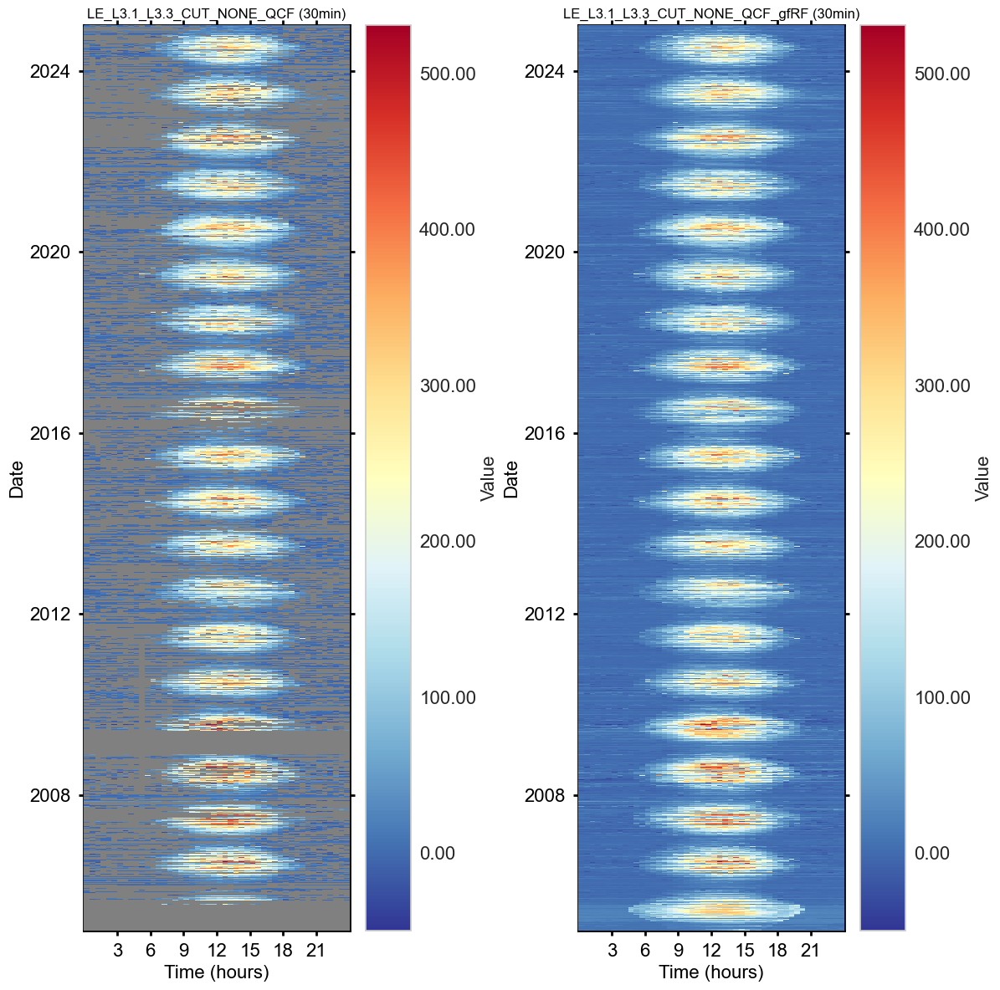
Plot: Gap-filled cumulatives per year#
fpc.showplot_gapfilled_cumulative(gain=1, units=r'($\mathrm{W\ m^{-2}}$)', per_year=True)
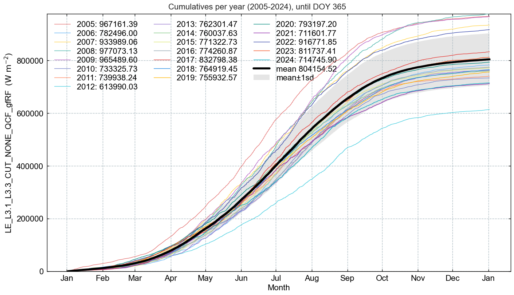
Plot: gap-filled cumulative across all data#
fpc.showplot_gapfilled_cumulative(gain=0.02161926, units=r'($\mathrm{gC\ m^{-2}}$)', per_year=False)
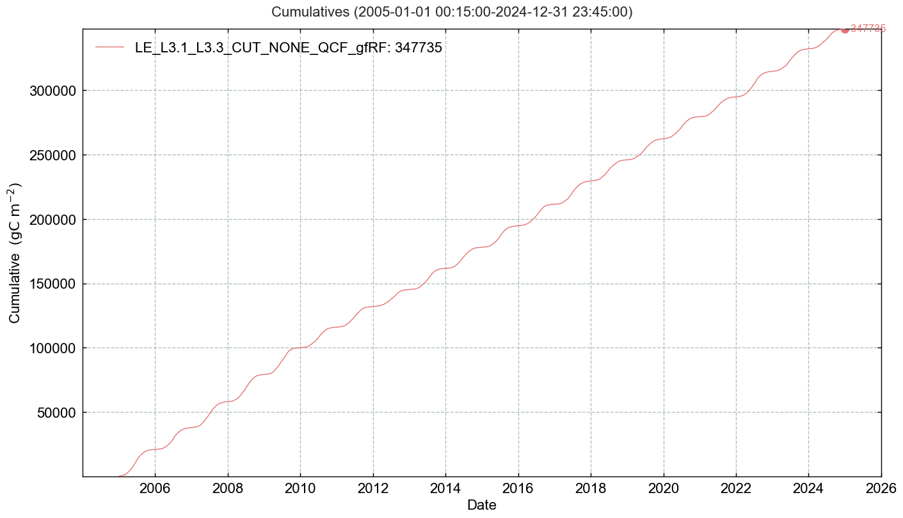
Plot: model feature ranks per year#
fpc.showplot_feature_ranks_per_year()
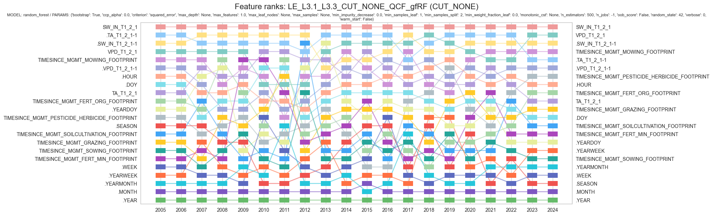
Save results to file#
Save results to file for futher processing
This can be useful if you want to use the data in another software, e.g. continuing post-processing using the library
ReddyProcinRParquetformat is recommended for large datasets
suffix = "LE"
Option 1: Save complete data (input data and results)#
# outfile = f"FluxProcessingChain_L4.1_complete_{suffix}"
# results.to_csv(f"{outfile}.csv") # large file, slow to read
# save_parquet(data=results, filename=f"{outfile}") # Smaller file, very fast to read
Option 2: Save flux processing chain results (without input data)#
Needed if you want to continue post-processing in notebooks
Can also be used in
Rwith thearrowpackage
outfile = f"42.1_FluxProcessingChain_L4.1_{suffix}"
fpc.fpc_df.to_csv(f"{outfile}.csv") # large file, slow to read
save_parquet(data=fpc.fpc_df, filename=f"{outfile}") # Smaller file, very fast to read
Saved file 42.1_FluxProcessingChain_L4.1_LE.parquet (0.567 seconds).
'42.1_FluxProcessingChain_L4.1_LE.parquet'
End of notebook#
Congratulations, you reached the end of this notebook! Before you go let’s store your finish time.
dt_string = datetime.now().strftime("%Y-%m-%d %H:%M:%S")
print(f"Finished. {dt_string}")
Finished. 2025-03-05 10:42:16